The BetLegend blog is the written archive behind the picks. This is where the daily betting analysis lives: why a side or total has value, what the market is doing, how matchups and injuries change a number, and how the plays graded out afterward. Unlike the homepage feed, every post here stays up as a permanent record of the reasoning, not just the result.
MLB Pick: Los Angeles Dodgers ML vs Atlanta Braves, NLDS Game 2, October 4, 2026
Posted: 3:05 AM PDT October 4, 2026
The play: Los Angeles Dodgers money line at -149, 2 units to win, 2.98 units at risk.
Atlanta visits Dodger Stadium for NLDS Game 2 at 5:00 PM Pacific, with the Dodgers up 1 to 0 in the series. Blake Snell starts for Los Angeles.
The Dodgers went 100 and 62 and scored 801 runs, 59 more than Atlanta's 742, and drew 628 walks to the Braves' 465. ESPN's matchup predictor gives Los Angeles a 62 percent chance to win.
The fair worry: Atlanta won 94 games, and the price has climbed from -149 at the DraftKings open to -158, so most of the value is gone at the current number.
Play
Price
To win
Risk
Break even
Kickoff PT
Dodgers ML
-149
2 units
2.98 units
59.84%
5:00 pm
-149 is the price this play was posted at; the TrustMyRecord board read -151 at 3:29 AM Pacific and the book grades at its own price.
That's the play: Dodgers ML at -149, 2 units to win. It's logged before kickoff on the public record at TrustMyRecord and graded there, win or lose. Records, season stats, probable starters, odds history and the matchup predictor are from ESPN, read at 3:40 AM Pacific on October 4.
MLB Pick: Cleveland Guardians ML vs Chicago White Sox, ALDS Game 2, October 5, 2026
Posted: 3:05 AM PDT October 4, 2026
The play: Cleveland Guardians money line at -150, 1 unit to win, 1.5 units at risk.
Chicago visits Progressive Field for ALDS Game 2 on Monday at 2:00 PM Pacific, with the White Sox up 1 to 0. Gavin Williams starts for Cleveland.
Cleveland went 85 and 77 and stole 146 bases. The White Sox struck out 1,494 times this season, 223 more than the Guardians. ESPN's matchup predictor gives Cleveland a 56.9 percent chance to win.
The fair worry: Cleveland scored only 678 runs to Chicago's 776, and the predictor's 56.9 percent sits below the 60 percent that -150 needs.
Play
Price
To win
Risk
Break even
Kickoff PT
Guardians ML
-150
1 unit
1.5 units
60.00%
2:00 pm Mon
-150 is the price this play was posted at; the TrustMyRecord board read -160 at 3:29 AM Pacific and the book grades at its own price.
That's the play: Guardians ML at -150, 1 unit to win. It's logged before kickoff on the public record at TrustMyRecord and graded there, win or lose. Records, season stats, probable starters, odds history and the matchup predictor are from ESPN, read at 3:40 AM Pacific on October 4.
MLB Pick: Yankees/Rays Under 7, ALDS Game 2, October 5, 2026
Posted: 3:05 AM PDT October 4, 2026
The play: Yankees/Rays Under 7 at -150, 2.5 units to win, 3.75 units at risk.
New York visits Tampa Bay for ALDS Game 2 on Monday at 5:00 PM Pacific, with the Rays up 1 to 0. Freddy Peralta starts for Tampa Bay and Cam Schlittler for New York.
Schlittler has already pitched 6.1 innings this postseason, allowing 2 hits and 1 walk with 10 strikeouts. The posted total is 6.5, so Under 7 buys a half run and a push on exactly 7.
The fair worry: the Yankees hit 223 home runs this season, and -150 needs this to stay at 6 runs or fewer, or land on 7, about 60 percent of the time.
Play
Price
To win
Risk
Break even
Kickoff PT
Yankees/Rays Under 7
-150
2.5 units
3.75 units
60.00%
5:00 pm Mon
Under 7 is an alternate line. -150 is the best price found, at Bovada, read at 3:22 AM Pacific; FanDuel and the TrustMyRecord board did not list 7.
That's the play: Yankees/Rays Under 7 at -150, 2.5 units to win. It's logged before kickoff on the public record at TrustMyRecord and graded there, win or lose. Records, season stats, probable starters, odds history and the matchup predictor are from ESPN, read at 3:40 AM Pacific on October 4.
NFL Pick: Cincinnati Bengals Team Total Over 20.5 vs Jacksonville, October 4, 2026
Posted: 3:05 AM PDT October 4, 2026
The play: Cincinnati Bengals team total Over 20.5 at -340, 2 units to win, 6.8 units at risk.
This goes with the Bengals money line. Cincinnati scores 26.7 points a game at home in a game DraftKings totals at 51.5, and Joe Burrow is 73 of 103 for 743 yards with 6 touchdowns. Tee Higgins has 244 receiving yards and Chase Brown has 197 on the ground.
The fair worry: Jacksonville has allowed only 12 points a game, and -340 needs the Bengals to clear 20.5 better than 77 percent of the time.
Play
Price
To win
Risk
Break even
Kickoff PT
Bengals TT Over 20.5
-340
2 units
6.8 units
77.27%
10:00 am
-340 is the price on the TrustMyRecord board, read at 3:03 AM Pacific.
That's the play: Bengals team total Over 20.5 at -340, 2 units to win. It's logged before kickoff on the public record at TrustMyRecord and graded there, win or lose. Records, team stats, leaders, injuries, odds history and the matchup predictor are from ESPN, read at 2:55 AM Pacific on October 4.
NFL Pick: San Francisco 49ers Team Total Over 20.5 vs Denver, October 4, 2026
Posted: 3:05 AM PDT October 4, 2026
The play: San Francisco 49ers team total Over 20.5 at -265, 5 units to win, 13.25 units at risk.
This goes with the 49ers money line. San Francisco is 3 and 0 and scores 32.7 points a game on 399.3 yards, and Brock Purdy has 9 touchdowns and 1 interception. Denver has allowed 398 yards and 143.7 rushing yards a game.
The fair worry: Mike Evans is questionable, and -265 needs San Francisco over 20.5 about 73 percent of the time.
Play
Price
To win
Risk
Break even
Kickoff PT
49ers TT Over 20.5
-265
5 units
13.25 units
72.60%
1:25 pm
-265 is the price on the TrustMyRecord board, read at 3:04 AM Pacific.
That's the play: 49ers team total Over 20.5 at -265, 5 units to win. It's logged before kickoff on the public record at TrustMyRecord and graded there, win or lose. Records, team stats, leaders, injuries, odds history and the matchup predictor are from ESPN, read at 2:55 AM Pacific on October 4.
NFL Pick: Indianapolis Colts -4.5 vs Washington Commanders, October 4, 2026
Posted: 3:05 AM PDT October 4, 2026
The play: Indianapolis Colts -4.5 at -109, 2 units to win, 2.18 units at risk.
Indianapolis and Washington meet at Tottenham Hotspur Stadium in London, kickoff 6:30 AM Pacific on NFL Network. Both teams are 1 and 2.
The number tells the story. DraftKings opened Washington -1.5 and it's Colts -4.5 now, a six point swing, and the injury report explains it: Jayden Daniels is out for the Commanders, along with running back Rachaad White, safety Nick Cross and guard Sam Cosmi, and Terry McLaurin is questionable. Marcus Mariota has thrown for 294 yards and 4 touchdowns in relief.
Jonathan Taylor has 258 yards and 4 touchdowns on 66 carries, and DeForest Buckner has 3 sacks. ESPN's matchup predictor gives Indianapolis a 56.4 percent chance to win.
The fair worry: the Colts defense has allowed 30.3 points and 432.3 yards a game, and Daniel Jones has 3 interceptions. Keenan Allen is out and Alec Pierce is on injured reserve, so the receiving room is thin.
Play
Price
To win
Risk
Break even
Kickoff PT
Colts -4.5
-109
2 units
2.18 units
52.15%
6:30 am
-109 at -4.5 is the DraftKings price on the TrustMyRecord board, read at 2:53 AM Pacific.
That's the play: Colts -4.5 at -109, 2 units to win. It's logged before kickoff on the public record at TrustMyRecord and graded there, win or lose. Records, team stats, leaders, injuries, odds history and the matchup predictor are from ESPN, read at 2:55 AM Pacific on October 4.
NFL Pick: Cincinnati Bengals ML vs Jacksonville Jaguars, October 4, 2026
Posted: 3:05 AM PDT October 4, 2026
The play: Cincinnati Bengals money line at -143, 2 units to win, 2.86 units at risk.
Jacksonville visits Cincinnati at Paycor Stadium, kickoff 10:00 AM Pacific on CBS. Both teams are 2 and 1.
Joe Burrow is 73 of 103 for 743 yards with 6 touchdowns and 1 interception, and Tee Higgins has 244 yards on 14 catches. The Bengals throw for 247.7 yards a game, and the market has leaned their way: DraftKings opened Cincinnati -135 and it's -142 now.
The fair worry: Jacksonville has allowed only 12 points a game, and ESPN's matchup predictor actually makes the Jaguars a 54.4 percent favorite. Trevor Lawrence has 7 touchdown passes. Cincinnati is also thin at safety, with Kyle Dugger out and Bryan Cook questionable.
Play
Price
To win
Risk
Break even
Kickoff PT
Bengals ML
-143
2 units
2.86 units
58.85%
10:00 am
-143 is the DraftKings price on the TrustMyRecord board, read at 2:53 AM Pacific.
That's the play: Bengals ML at -143, 2 units to win. It's logged before kickoff on the public record at TrustMyRecord and graded there, win or lose. Records, team stats, leaders, injuries, odds history and the matchup predictor are from ESPN, read at 2:55 AM Pacific on October 4.
NFL Pick: Las Vegas Raiders +4.5 vs Kansas City Chiefs, October 4, 2026
Posted: 3:05 AM PDT October 4, 2026
The play: Las Vegas Raiders +4.5 at -106, 1 unit to win, 1.06 units at risk.
Kansas City visits Las Vegas at Allegiant Stadium, kickoff 1:25 PM Pacific on CBS. Both teams are 3 and 0.
The Raiders score 29.3 points a game, the same as the Chiefs, and allow 18. Kirk Cousins has 9 touchdown passes, and Malcolm Koonce has 2.5 sacks. Kansas City opened -5.5 at DraftKings and it's down to -4.5, so the move has come toward Las Vegas.
The fair worry: Kansas City outgains teams 424 yards to 283.3 a game, Kenneth Walker III has 360 rushing yards, and ESPN's matchup predictor gives the Chiefs a 69.6 percent chance to win. Raiders guard Jackson Powers Johnson is out.
Play
Price
To win
Risk
Break even
Kickoff PT
Raiders +4.5
-106
1 unit
1.06 units
51.46%
1:25 pm
-106 at +4.5 is the DraftKings price on the TrustMyRecord board, read at 2:54 AM Pacific.
That's the play: Raiders +4.5 at -106, 1 unit to win. It's logged before kickoff on the public record at TrustMyRecord and graded there, win or lose. Records, team stats, leaders, injuries, odds history and the matchup predictor are from ESPN, read at 2:55 AM Pacific on October 4.
NFL Pick: San Francisco 49ers ML vs Denver Broncos, October 4, 2026
Posted: 3:05 AM PDT October 4, 2026
The play: San Francisco 49ers money line at -150, 1.5 units to win, 2.25 units at risk.
Denver visits San Francisco at Levi's Stadium, kickoff 1:25 PM Pacific on CBS. The 49ers are 3 and 0, the Broncos 2 and 1.
Brock Purdy is 60 of 83 for 789 yards with 9 touchdowns and 1 interception, George Kittle has 3 touchdown catches, and San Francisco scores 32.7 points a game while allowing 16.7. Denver scores 20 and gains 282.7 yards a game. ESPN's matchup predictor gives the 49ers a 77.9 percent chance to win, well clear of the 60 percent that -150 needs.
The fair worry: Mike Evans and linebacker Dre Greenlaw are questionable and Mykel Williams is out, and Zach Allen has 3 sacks for Denver. The money line has moved from -135 at the DraftKings open to -148.
Play
Price
To win
Risk
Break even
Kickoff PT
49ers ML
-150
1.5 units
2.25 units
60.00%
1:25 pm
-150 is the DraftKings price on the TrustMyRecord board, read at 2:54 AM Pacific.
That's the play: 49ers ML at -150, 1.5 units to win. It's logged before kickoff on the public record at TrustMyRecord and graded there, win or lose. Records, team stats, leaders, injuries, odds history and the matchup predictor are from ESPN, read at 2:55 AM Pacific on October 4.
College Football Pick: Arizona Wildcats ML vs Cincinnati, October 3, 2026
Posted: 6:35 PM PDT October 3, 2026
The play: Arizona Wildcats money line at -265, 3 units to win, 7.95 units at risk.
Cincinnati visits Arizona at Casino Del Sol Stadium, kickoff 8:00 PM Pacific on FOX.
Noah Fifita is 99 of 131 for 1,131 yards with 11 touchdowns and 2 interceptions, and Arizona is throwing for 303.8 yards a game. The Wildcats convert 54.9 percent of their third downs and have allowed 19 points a game.
Arizona is 3 and 1, and the only loss was 28 to 17 at BYU. Last week the Wildcats won 34 to 24 at Washington State.
The fair worry: Cincinnati is 4 and 0 and runs for 270 yards a game at 6.5 a carry, and Gi'Bran Payne has 368 yards on 51 carries. ESPN's matchup predictor has Arizona at only 56.2 percent, well short of the 72.6 percent that -265 needs, and the market has drifted toward the Bearcats: DraftKings opened Arizona -8.5 and -285 on the money line, and it's -7 and -265 now.
Play
Price
To win
Risk
Break even
Kickoff PT
Arizona Wildcats ML
-265
3 units
7.95 units
72.60%
8:00 pm
-265 is the DraftKings price on the TrustMyRecord board, read at 6:23 PM Pacific.
That's the play: Arizona Wildcats ML at -265, 3 units to win. It's logged before kickoff on the public record at TrustMyRecord and graded there, win or lose. Scores, team stats, leaders, odds and the matchup predictor are from ESPN, read at 6:25 PM Pacific on October 3.
College Football Pick: Hawaii Rainbow Warriors -3 vs San Jose State, October 3, 2026
Posted: 6:35 PM PDT October 3, 2026
The play: Hawaii Rainbow Warriors -3 at -110, 1.5 units to win, 1.65 units at risk.
San Jose State visits Hawaii at the Clarence T.C. Ching Athletics Complex, kickoff 9:00 PM Pacific.
San Jose State has trouble on the money downs. The Spartans convert 33.9 percent of their third downs, Luke Weaver has thrown 5 interceptions, and they've allowed 27.3 points a game. ESPN's matchup predictor gives Hawaii a 67.3 percent chance to win.
The fair worry: Hawaii is 1 and 3 and scoring 18 points a game. The Rainbow Warriors run for just 83.3 yards a game at 3.2 a carry, and Micah Alejado is at 5.6 yards an attempt. The market has moved toward San Jose State too: DraftKings opened Hawaii -5.5 and it's -2.5 now.
Play
Price
To win
Risk
Break even
Kickoff PT
Hawaii -3
-110
1.5 units
1.65 units
52.38%
9:00 pm
-110 at -3 is the Bovada price, read at 6:23 PM Pacific. DraftKings has Hawaii -2.5 at -120.
That's the play: Hawaii -3 at -110, 1.5 units to win. It's logged before kickoff on the public record at TrustMyRecord and graded there, win or lose. Scores, team stats, leaders, odds and the matchup predictor are from ESPN, read at 6:25 PM Pacific on October 3.
College Football Pick: TCU Horned Frogs +7 vs BYU, October 3, 2026
Posted: 3:45 PM PDT October 3, 2026
The play: TCU Horned Frogs +7 at -150, 3 units to win, 4.5 units at risk.
No. 10 BYU visits TCU at Amon G. Carter Stadium, kickoff 4:00 PM Pacific on ESPN.
TCU can throw it. The Horned Frogs average 303.3 passing yards a game at 9.1 yards an attempt, and they're plus 2 in turnovers. At home with the full touchdown, I want the points.
The fair worry: BYU is 3 and 0, runs for 262.7 yards a game and converts 61.3 percent of its third downs. TCU lost 15 to 10 at home to North Carolina and 21 to 13 at UCF, and ESPN's matchup predictor gives BYU a 70.5 percent chance to win. DraftKings opened BYU -5.5 and it's -6 now. I'm paying -150 at Bovada to own +7.
Play
Price
To win
Risk
Break even
Kickoff PT
TCU +7
-150
3 units
4.5 units
60.00%
4:00 pm
-150 for +7 is the Bovada alternate line, read at 3:35 PM Pacific. The standard number is TCU +6 at -108 at DraftKings.
That's the play: TCU +7 at -150, 3 units to win. It's logged before kickoff on the public record at TrustMyRecord and graded there, win or lose. Scores, team stats, odds and the matchup predictor are from ESPN, read at 3:40 PM Pacific on October 3.
College Football Pick: Colorado Buffaloes +14.5 vs Texas Tech, October 3, 2026
Posted: 3:45 PM PDT October 3, 2026
The play: Colorado Buffaloes +14.5 at -135, 3 units to win, 4.05 units at risk.
Adding to the Colorado +13 play from this morning. No. 12 Texas Tech visits Folsom Field, kickoff 4:30 PM Pacific on FOX.
Will Hammond has thrown 5 interceptions against 4 touchdowns, and Texas Tech has 8 giveaways. The Red Raiders only beat Houston 28 to 26 at home. Colorado beat Weber State 52 to 21 in its only home game and won 14 to 13 at Georgia Tech.
The fair worry: Colorado scores 21.5 points a game and has been sacked 10 times, and ESPN's matchup predictor gives Texas Tech an 86.3 percent chance to win. I'm paying -135 at Bovada for the extra point and a half past two touchdowns.
Play
Price
To win
Risk
Break even
Kickoff PT
Colorado +14.5
-135
3 units
4.05 units
57.45%
4:30 pm
-135 for +14.5 is the Bovada alternate line, read at 3:35 PM Pacific. The standard number is Colorado +13.5 at -110 at DraftKings.
That's the play: Colorado +14.5 at -135, 3 units to win. It's logged before kickoff on the public record at TrustMyRecord and graded there, win or lose. Scores, team stats, odds and the matchup predictor are from ESPN, read at 3:40 PM Pacific on October 3.
College Football Pick: Texas A&M Aggies -14 vs Arkansas, October 3, 2026
Posted: 3:30 PM PDT October 3, 2026
The play: Texas A&M Aggies -14 at -110, 2 units to win, 2.2 units at risk.
Arkansas visits Texas A&M at Kyle Field, kickoff 4:00 PM Pacific on ESPN2.
Arkansas can't run the ball. The Razorbacks are averaging 89.5 rushing yards a game at 2.6 a carry, and they've allowed 13 sacks. That puts everything on KJ Jackson's arm on the road.
Texas A&M is plus 5 in turnover margin and has given up 21.5 points a game. Arkansas has allowed 27, including 43 to Utah and 45 to Georgia.
ESPN's matchup predictor gives Texas A&M an 86.7 percent chance to win. DraftKings opened the Aggies at -14.5 and they're -13.5 there now.
The fair worry: A&M has lost two straight, 31 to 21 to Kentucky and 35 to 6 at LSU, and Marcel Reed is averaging 5.6 yards a pass attempt with 4 interceptions. Two touchdowns is a lot for this offense right now.
Play
Price
To win
Risk
Break even
Kickoff PT
Texas A&M -14
-110
2 units
2.2 units
52.38%
4:00 pm
-110 at -14 is the DraftKings price on the TrustMyRecord board at 3:23 PM Pacific.
That's the play: Texas A&M -14 at -110, 2 units to win. It's logged before kickoff on the public record at TrustMyRecord and graded there, win or lose. Scores, team stats, leaders, odds and the matchup predictor are from ESPN, read at 3:25 PM Pacific on October 3.
College Football Pick: Iowa Hawkeyes Team Total Over 9.5 vs Ohio State, October 3, 2026
Posted: 9:10 AM PDT October 3, 2026
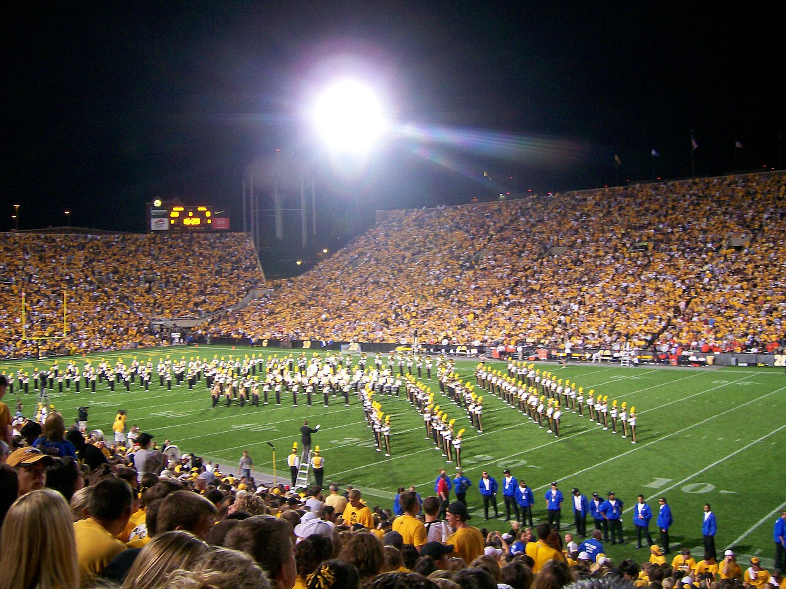
Kinnick Stadium in Iowa City, where Iowa hosts Ohio State on Saturday. Photo: Count_de_Des_Moines, CC BY-SA 3.0, via Wikimedia Commons.
The play: Iowa Hawkeyes team total over 9.5 at -360, 2.5 units to win, 9 units at risk.
Same game as the Ohio State -14 play, kickoff 12:30 PM Pacific on CBS at Kinnick Stadium.
Iowa only needs 10 points at home. The Hawkeyes have scored 40, 16, 55 and 20 this season, 32.8 a game, and they cleared 9.5 in every one of them, including the 20 at Michigan.
The run game travels anywhere. Iowa is gaining 215.5 rushing yards a game at 6.5 a carry, and Kamari Moulton has 284 yards on 39 carries.
The fair worry: Ohio State's defense is allowing 12.3 points a game, and Ball State and Kent State both finished with 3. That's why the price is -360 and not cheaper. Texas got 24 and Illinois got 19 against this same defense.
Play
Price
To win
Risk
Break even
Kickoff PT
Iowa Team Total Over 9.5
-360
2.5 units
9 units
78.26%
12:30 pm
-360 is the price on the TrustMyRecord book at entry, 9:03 AM Pacific.
That's the play: Iowa Hawkeyes team total over 9.5 at -360, 2.5 units to win. It's logged before kickoff on the public record at TrustMyRecord and graded there, win or lose. Scores, team stats and leaders are from ESPN, read October 3.
College Football Pick: Navy at Air Force Under 46, October 3, 2026
Posted: 8:25 AM PDT October 3, 2026
The play: Navy at Air Force under 46 at -120, 2 units to win, 2.4 units at risk.
Navy visits Air Force at Falcon Stadium, kickoff 9:00 AM Pacific on CBS.
Two service academy offenses that live on the ground. Both teams are running for 333.7 yards a game. Air Force has 192 rushing attempts and 35 passes in three games, Navy has 167 runs and 42 passes. When both sides keep the ball on the ground, the clock keeps moving.
The market has been moving toward the under all week. DraftKings opened the total at 49.5 and it's 45.5 now, a 4 point drop.
The fair worry: these games haven't been low scoring. Air Force lost 38 to 32 to North Dakota State and won 36 to 33 at Nevada, and Navy lost 38 to 30 at FAU. Air Force is scoring 34 points a game and Navy 30.7. I'm paying -120 to get the extra half point at 46.
Play
Price
To win
Risk
Break even
Kickoff PT
Navy/Air Force Under 46
-120
2 units
2.4 units
54.55%
9:00 am
-120 for under 46 is the Bovada alternate total, read at 8:17 AM Pacific. The standard number is 45.5 at -108 at DraftKings.
That's the play: Navy/Air Force under 46 at -120, 2 units to win. It's logged before kickoff on the public record at TrustMyRecord and graded there, win or lose. Scores, team stats and odds are from ESPN, read at 8:20 AM Pacific on October 3.
College Football Pick: Notre Dame Fighting Irish -21.5 at North Carolina, October 3, 2026
Posted: 2:00 AM PDT October 3, 2026
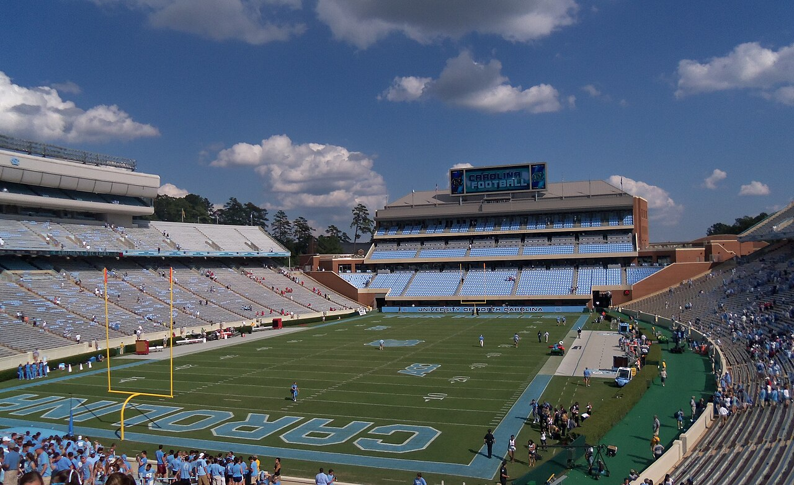
Kenan Stadium in Chapel Hill, where North Carolina hosts Notre Dame on Saturday morning. Photo: Tnbailey09, CC BY-SA 3.0, via Wikimedia Commons.
The play: Notre Dame Fighting Irish -21.5 at -110, 1.5 units to win, 1.65 units at risk.
No. 3 Notre Dame visits North Carolina at Kenan Stadium, kickoff 9:00 AM Pacific on ESPN.
Notre Dame is 4 and 0 and hasn't been tested. The Irish beat Wisconsin 41 to 13, Rice 52 to 0, Michigan State 27 to 10 and won 49 to 10 at Purdue. That's 42.3 points a game scored and 8.3 allowed, a margin of 34 a game.
CJ Carr is 67 of 95 for 963 yards with 9 touchdowns and 1 interception, and the team averages 9.8 yards a pass attempt. Micah Gilbert has 334 receiving yards. The Irish are plus 7 in turnovers, 8 takeaways against 1 giveaway.
North Carolina is 2 and 1 and scoring 23.3 a game. The Tar Heels are completing 56 percent of their passes and lost 28 to 20 at Clemson. ESPN's matchup predictor gives Notre Dame a 91.3 percent chance to win.
The fair worry: the market went the other way. DraftKings opened Notre Dame at -24.5 and it's down to -21 there, and North Carolina's defense has allowed just 13.7 points a game. A 21.5 point cushion is a lot to ask on the road.
Play
Price
To win
Risk
Break even
Kickoff PT
Notre Dame -21.5
-110
1.5 units
1.65 units
52.38%
9:00 am
-110 at -21.5 is the DraftKings price on the TrustMyRecord board at 1:20 AM Pacific.
That's the play: Notre Dame -21.5 at -110, 1.5 units to win. It's logged before kickoff on the public record at TrustMyRecord and graded there, win or lose. Scores, team stats, leaders, opening lines and the matchup predictor are from ESPN, read at 1:30 AM Pacific on October 3.
College Football Pick: Ohio State Buckeyes -14 at Iowa, October 3, 2026
Posted: 2:00 AM PDT October 3, 2026
Kinnick Stadium in Iowa City, where Iowa hosts Ohio State on Saturday. Photo: Count_de_Des_Moines, CC BY-SA 3.0, via Wikimedia Commons.
The play: Ohio State Buckeyes -14 at -110, 3 units to win, 3.3 units at risk.
No. 5 Ohio State visits No. 14 Iowa at Kinnick Stadium, kickoff 12:30 PM Pacific on CBS.
The Ohio State passing game is the reason. Julian Sayin is 83 of 115 for 1,206 yards with 10 touchdowns and 1 interception, and the Buckeyes average 11.0 yards a pass attempt. Jeremiah Smith has 33 catches for 617 yards and 7 touchdowns.
Ohio State is 3 and 1, scoring 45 points a game and allowing 12.3. The only loss was 24 to 23 at Texas. Iowa throws for just 213.5 yards a game, and Hank Brown is at 7.2 yards an attempt on 66 of 97 passing. If Iowa falls behind, it isn't built to come back throwing.
The number helps too. DraftKings opened Ohio State -14 and has it at -14.5 now, so the TrustMyRecord board still gives us the opener. ESPN's matchup predictor gives Ohio State an 83 percent chance to win.
The fair worry: Iowa is 4 and 0, has allowed 8 points a game, won 20 to 19 at Michigan, and runs for 215.5 yards a game at 6.5 a carry. Kinnick is a tough place to cover two touchdowns.
Play
Price
To win
Risk
Break even
Kickoff PT
Ohio State -14
-110
3 units
3.3 units
52.38%
12:30 pm
-110 at -14 is the DraftKings price on the TrustMyRecord board at 1:20 AM Pacific. DraftKings shows -14.5 on ESPN at 1:30 AM.
That's the play: Ohio State -14 at -110, 3 units to win. It's logged before kickoff on the public record at TrustMyRecord and graded there, win or lose. Scores, team stats, leaders, opening lines and the matchup predictor are from ESPN, read at 1:30 AM Pacific on October 3.
College Football Pick: Missouri Tigers +5.5 vs Florida, October 3, 2026
Posted: 2:00 AM PDT October 3, 2026
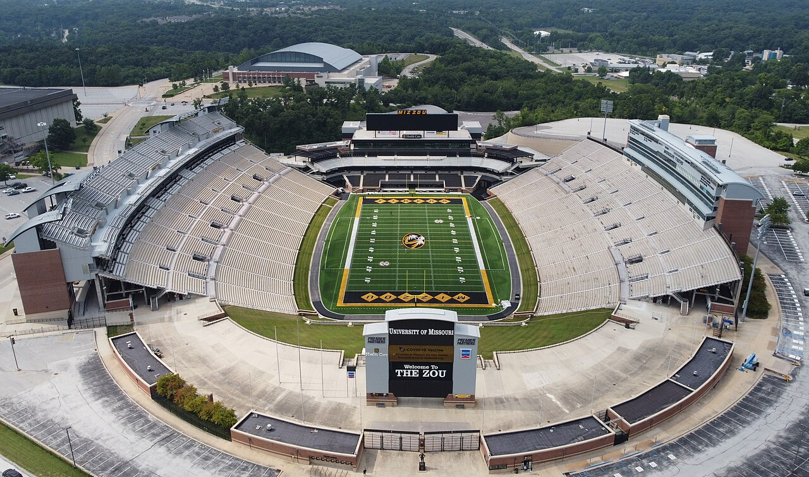
Faurot Field at Memorial Stadium in Columbia, where Missouri hosts Florida on Saturday. Photo: Lectrician2, CC BY-SA 4.0, via Wikimedia Commons.
The play: Missouri Tigers +5.5 at -110, 1 unit to win, 1.1 units at risk.
No. 8 Florida visits No. 25 Missouri at Faurot Field, kickoff 12:30 PM Pacific on ABC.
Austin Simmons hasn't thrown an interception. He's 70 of 107 for 947 yards with 11 touchdowns, and Missouri is scoring 35.8 points a game. Cayden Lee has 412 receiving yards and Daeden Hopkins has 6 sacks.
Florida's lone road game is the one I keep coming back to. The Gators won 44 to 39 at Auburn, and they've given up 22.8 points a game overall. Missouri is 3 and 1, its only loss a 31 to 24 game at Mississippi State, and this one is at home.
The fair worry: the market is all over Florida. DraftKings opened the Gators at -2.5 and they're -5.5 now, and the Missouri money line went from +110 to +180. Jadan Baugh has 600 rushing yards and 11 touchdowns, Florida runs for 260 yards a game, and ESPN's matchup predictor has Florida at 70.1 percent.
I'll take the extra points with the home team and the quarterback who hasn't turned it over.
Play
Price
To win
Risk
Break even
Kickoff PT
Missouri +5.5
-110
1 unit
1.1 units
52.38%
12:30 pm
-110 at +5.5 is the DraftKings price on the TrustMyRecord board at 1:20 AM Pacific.
That's the play: Missouri +5.5 at -110, 1 unit to win. It's logged before kickoff on the public record at TrustMyRecord and graded there, win or lose. Scores, team stats, leaders, opening lines and the matchup predictor are from ESPN, read at 1:30 AM Pacific on October 3.
College Football Pick: South Carolina Gamecocks -3 vs Kentucky, October 3, 2026
Posted: 2:00 AM PDT October 3, 2026
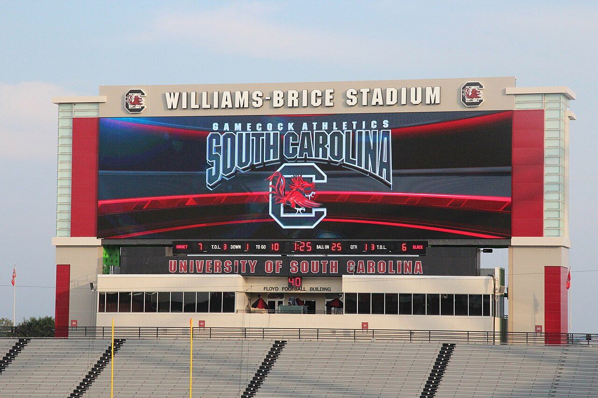
The South Carolina video board in Columbia, where the Gamecocks host Kentucky on Saturday. Photo: Idibri, CC BY 2.0, via Wikimedia Commons.
The play: South Carolina Gamecocks -3 at -112, 3 units to win, 3.36 units at risk.
No. 24 Kentucky visits South Carolina in Columbia, kickoff 1:15 PM Pacific on SEC Network.
South Carolina runs the ball. The Gamecocks are gaining 262 rushing yards a game at 6.6 a carry, and Matt Fuller has 384 yards on 57 carries. They're scoring 38.5 points a game.
Kentucky has had real trouble moving the chains. The Wildcats are converting 23.1 percent of their third downs and have allowed 8 sacks. They lost 45 to 17 at home to Alabama, and they've given up 25 points a game.
South Carolina's record is 2 and 2, but look at who beat them: Alabama on the road and Mississippi State in a 41 to 34 shootout. ESPN's matchup predictor still makes South Carolina a 57.8 percent favorite.
The fair worry: this line has collapsed. DraftKings opened South Carolina at -7 and it's -2.5 now, with the money line going from -270 to -142. Kentucky won 31 to 21 at Texas A&M, and LaNorris Sellers has thrown 4 interceptions. I'm laying the 3 anyway.
Play
Price
To win
Risk
Break even
Kickoff PT
South Carolina -3
-112
3 units
3.36 units
52.83%
1:15 pm
-112 at -3 is the DraftKings price on the TrustMyRecord board at 1:20 AM Pacific. DraftKings shows -2.5 on ESPN at 1:30 AM.
That's the play: South Carolina -3 at -112, 3 units to win. It's logged before kickoff on the public record at TrustMyRecord and graded there, win or lose. Scores, team stats, leaders, opening lines and the matchup predictor are from ESPN, read at 1:30 AM Pacific on October 3.
College Football Pick: Colorado Buffaloes +13 vs Texas Tech, October 3, 2026
Posted: 2:00 AM PDT October 3, 2026
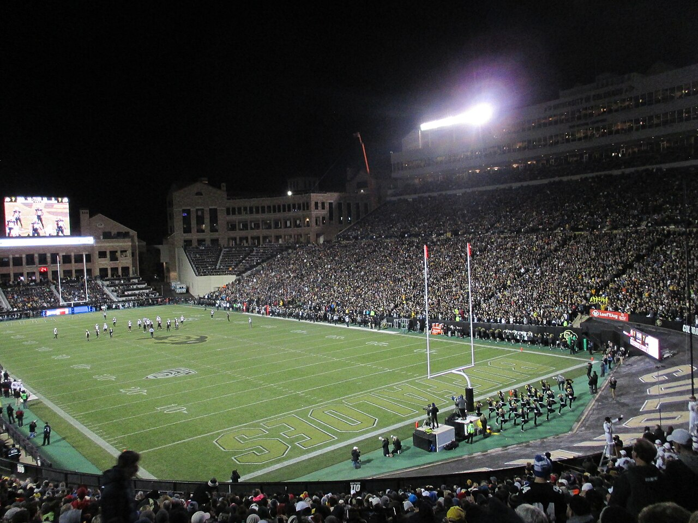
Folsom Field in Boulder, where Colorado hosts Texas Tech on Saturday. Photo: Thelastcanadian, CC BY-SA 4.0, via Wikimedia Commons.
The play: Colorado Buffaloes +13 at -115, 2 units to win, 2.3 units at risk.
No. 12 Texas Tech visits Colorado at Folsom Field, kickoff 4:30 PM Pacific on FOX.
Texas Tech is 4 and 0, but the ball security isn't there. Will Hammond has thrown 5 interceptions against 4 touchdowns, and the Red Raiders have 8 giveaways. They only beat Houston 28 to 26 at home.
This is Colorado's second home game of the year. The first was a 52 to 21 win over Weber State, and the Buffaloes also won 14 to 13 at Georgia Tech. Joseph Williams has 361 receiving yards and 4 touchdowns.
The market is drifting our way. DraftKings opened Texas Tech at -14.5 and it's -13.5 now, and the Colorado money line moved from +550 to +425.
The fair worry: Colorado's offense is scoring 21.5 points a game, has been sacked 10 times, and lost 41 to 7 at Northwestern. ESPN's matchup predictor gives Texas Tech an 86.3 percent chance to win, and the Red Raiders allow 18.5 a game. I want the 13 points at home.
Play
Price
To win
Risk
Break even
Kickoff PT
Colorado +13
-115
2 units
2.3 units
53.49%
4:30 pm
-115 at +13 is the DraftKings price on the TrustMyRecord board at 1:20 AM Pacific.
That's the play: Colorado +13 at -115, 2 units to win. It's logged before kickoff on the public record at TrustMyRecord and graded there, win or lose. Scores, team stats, leaders, opening lines and the matchup predictor are from ESPN, read at 1:30 AM Pacific on October 3.
College Football Pick: Northwestern Wildcats +3 vs Penn State, October 2, 2026
Posted: 4:15 PM PDT October 2, 2026
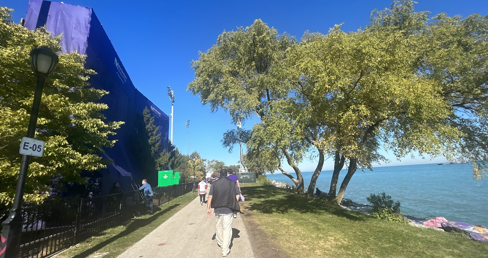
Northwestern football in Evanston, where the Wildcats host Penn State on Friday night.
The play: Northwestern Wildcats +3 at -125, 1 unit to win, 1.25 units at risk. Penn State visits Northwestern at Ryan Field on Friday, kickoff 5:00 PM Pacific on FOX.
Start with the market, because it's loud. DraftKings opened Penn State at -7 and it's down to -2.5. The Northwestern money line went from +225 all the way to +120. That's a big move toward the home dog in a Big Ten game.
Northwestern comes in 2 and 1. The Wildcats beat San Diego State 34 to 18, crushed Colorado 41 to 7, then lost 29 to 23 at Indiana last week. Aidan Chiles is 53 of 75 for 807 yards with 6 touchdowns, and Griffin Wilde has 245 receiving yards. The offense is putting up 32.7 points and 415 yards a game.
Penn State is 3 and 1, but the loss is the one that matters. The Nittany Lions fell 24 to 20 at Wisconsin last Saturday, and before that they managed 27 points against Temple. Rocco Becht is 57 of 93 for 865 yards.
The fair worry: Penn State's defense numbers are excellent, 11.5 points and 239.5 yards allowed a game, while Northwestern is giving up 199.3 rushing yards a game. ESPN's matchup predictor still has Penn State at 56.1 percent. I'm paying -125 at Bovada to own the full 3 in a game the market now prices close to a field goal.
Play
Price
To win
Risk
Break even
Kickoff PT
Northwestern Wildcats +3
-125
1 unit
1.25 units
55.56%
5:00 pm
-125 for +3 is the Bovada alternate line, read at 3:55 PM Pacific. The standard number is Northwestern +2.5 at -102 at DraftKings.
That's the play: Northwestern Wildcats +3 at -125, 1 unit to win. It's logged before kickoff on the public record at TrustMyRecord and graded there, win or lose. Scores, team stats, leaders and odds are from ESPN, read at 4:05 PM Pacific on October 2.
College Football Pick: Pittsburgh Panthers +3 at Virginia Tech, October 2, 2026
Posted: 10:55 AM PDT October 2, 2026
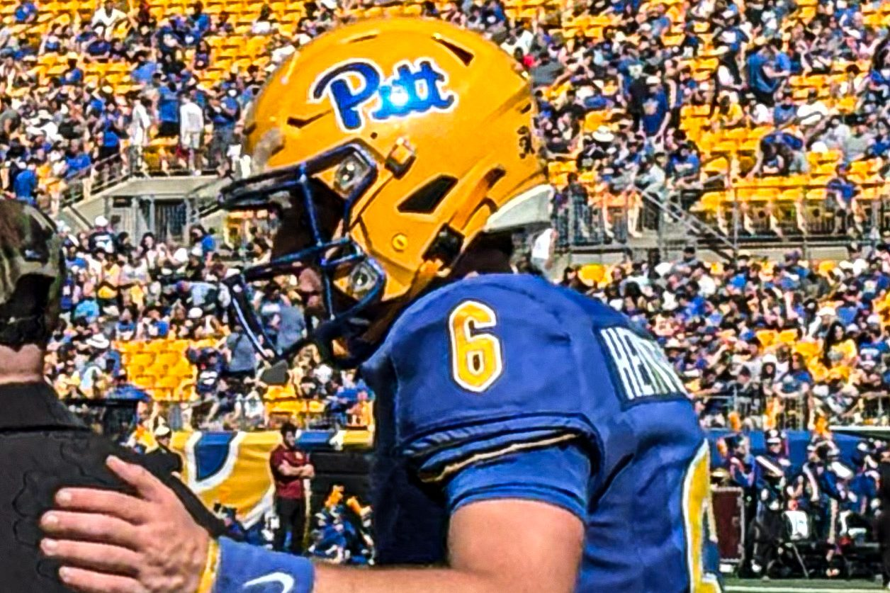
Pitt quarterback Mason Heintschel during his first start in 2025. Photo: Cramerwiki, CC0, via Wikimedia Commons.
The play: Pittsburgh Panthers +3 at -130, 3 units to win, 3.9 units at risk. Pitt visits Virginia Tech at Lane Stadium on Friday, kickoff 4:00 PM Pacific on ESPN.
Both teams are 4 and 0, so I threw out the FCS games and looked at what each defense did against FBS teams. Pitt has given up 280.7 yards and 11.3 points a game to Miami of Ohio, UCF and Syracuse. Virginia Tech has allowed 331.3 yards and 20.3 points to Old Dominion, Maryland and Boston College.
The Pitt run defense is the reason I'm here. Those three FBS opponents ran for 182 yards combined, 60.7 a game, and UCF averaged 0.9 yards a carry. Virginia Tech wants to run with Jeffrey Overton Jr., who has 409 yards on 60 carries. If he can't get going, Ethan Grunkemeyer has to win it throwing.
On the other side, Mason Heintschel is 88 of 130 for 1,191 yards with 13 touchdowns and 1 interception. Maryland threw for 359 yards on this Virginia Tech defense two weeks ago.
The market sees it too. DraftKings opened Virginia Tech at -5.5 and it's down to -2.5, and the Pitt money line went from +170 to +110. ESPN's matchup predictor actually makes Pitt the favorite at 57.8 percent.
The fair worry: Pitt's offense put up just 315 yards in a 12 to 7 win over UCF, and this is a road game at Lane Stadium. I'm paying -130 at Bovada to own the full 3 in a game priced like a field goal either way.
Play
Price
To win
Risk
Break even
Kickoff PT
Pittsburgh Panthers +3
-130
3 units
3.9 units
56.52%
4:00 pm
-130 for +3 is the Bovada alternate line, read at 10:40 AM Pacific. The standard number is Pitt +2.5 at -115 at DraftKings.
That's the play: Pittsburgh Panthers +3 at -130, 3 units to win. It's logged before kickoff on the public record at TrustMyRecord and graded there, win or lose. Box scores, records, team leaders and odds are from ESPN, read at 10:45 AM Pacific on October 2.
NHL Pick: Dallas Stars ML vs St. Louis Blues, October 2, 2026
Posted: 9:10 AM PDT October 2, 2026
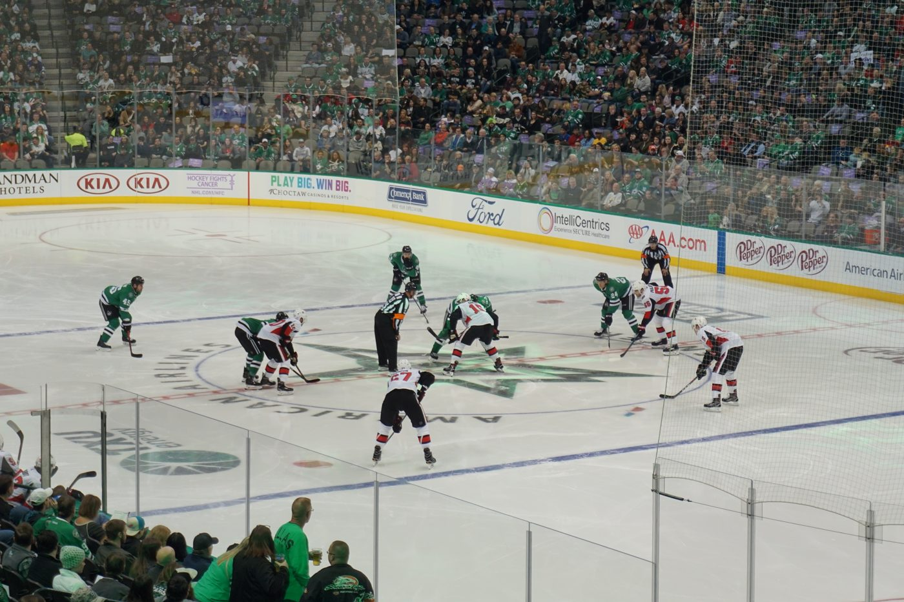
The Stars at American Airlines Center, where they open the 2026 to 27 season against St. Louis on Friday night. Photo: Michael Barera, CC BY-SA 4.0, via Wikimedia Commons.
The play: Dallas Stars money line at -180, 2 units to win, 3.6 units at risk. St. Louis visits Dallas for opening night, puck drop 6:00 PM Pacific on TNT and truTV.
It's game one for both clubs, so last season is the evidence. Dallas finished 50, 20 and 12 with 112 points and a +53 goal differential. St. Louis finished 37, 33 and 12 with 86 points and a goal differential of 27 the wrong way. The Stars scored 3.33 goals a game and allowed 2.71. The Blues scored 2.80 and allowed 3.10.
The special teams gap is the part I like most. Dallas ran a 28.6 percent power play last season. St. Louis killed only 76.7 percent of its penalties. Put the Blues in the box a few times and that's where this game tilts.
Home ice backs it up. Dallas went 26, 11 and 4 at American Airlines Center. St. Louis was 17, 19 and 5 on the road. The Stars also took 3 of 4 from the Blues last season, all decided in regulation.
The fair worry: Joel Hofer is the expected Blues starter, and he was the better goalie on paper last year, .910 with 6 shutouts against Jake Oettinger's .899. Dallas also opens without Matt Duchene, who is on injured reserve. The market noticed the Blues too: DraftKings opened Dallas at -205 and it's down to -185. I'm still on the home side at the cheaper number.
Play
Price
To win
Risk
Break even
Puck drop PT
Dallas Stars ML
-180
2 units
3.6 units
64.29%
6:00 pm
-180 is my number. The TrustMyRecord board stored the pick at its own price of -183, and DraftKings shows -185 on ESPN's odds feed this morning.
That's the play: Dallas Stars ML at -180, 2 units to win. It's logged before puck drop on the public record at TrustMyRecord and graded there, win or lose. Last season's team stats, splits and goalie numbers are from the NHL stats API; injuries, probable goalies and odds are from ESPN, read at 9:00 AM Pacific on October 2.
College Football Pick: New Mexico State ML vs Western Kentucky, October 1, 2026
Posted: 3:30 PM PDT October 1, 2026
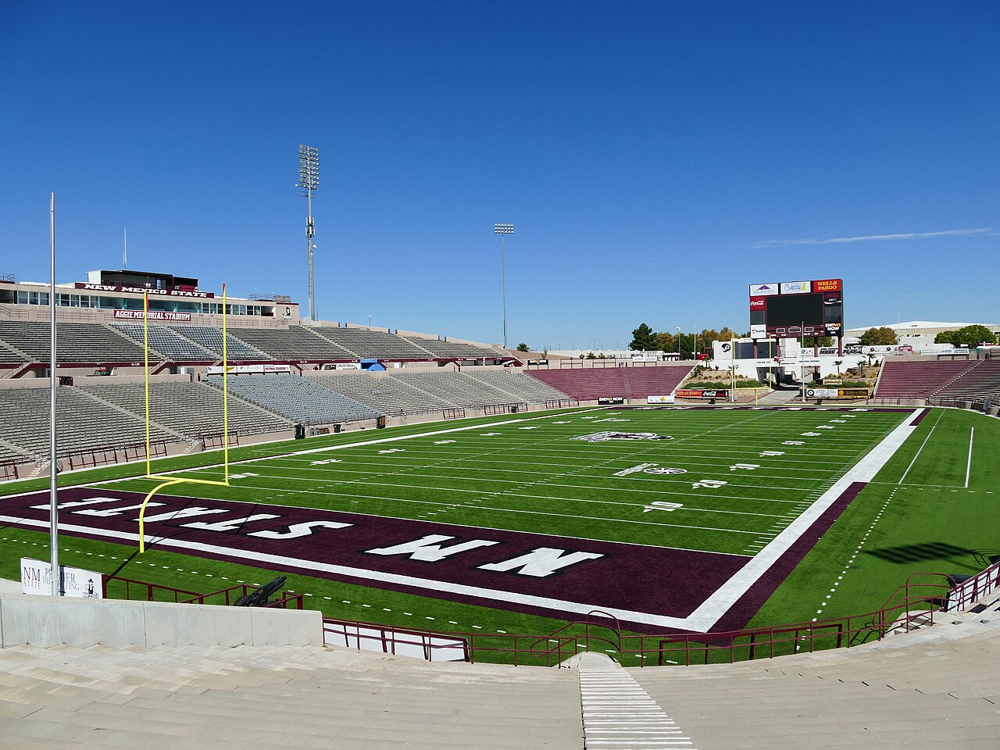
Aggie Memorial Stadium in Las Cruces, where New Mexico State hosts Western Kentucky on Thursday night. Photo: 04NMAggie, CC BY-SA 4.0, via Wikimedia Commons.
The play: New Mexico State money line at -130, 2 units to win, 2.6 units at risk. Western Kentucky visits Las Cruces on Thursday, kickoff 5:00 PM Pacific.
Both teams are 1 and 3, but the yardage isn't close. New Mexico State is gaining 414.5 yards a game, Western Kentucky 343.5. The Aggies also allow fewer, 376.5 yards a game to the Hilltoppers' 439.
Western Kentucky's run defense is the problem. It's giving up 220.5 rushing yards a game, and New Mexico State's James Jones has 355 yards on 57 carries, better than 6 a pop. That's the matchup I want to lean on.
The fair worry: Western Kentucky's schedule had Georgia and Indiana on it, which inflates those defensive numbers, and New Mexico State just lost 42 to 18 at home to New Mexico. Trey Hedden has also thrown 5 interceptions. I'm still on the home side.
Play
Price
To win
Risk
Break even
Kickoff PT
New Mexico State ML
-130
2 units
2.6 units
56.52%
5:00 pm
-130 is the DraftKings price on the TrustMyRecord board at 3:10 PM Pacific.
That's the play: New Mexico State ML at -130, 2 units to win. It's logged before kickoff on the public record at TrustMyRecord and graded there, win or lose. Records, team stats and leaders are from ESPN, read at 3:20 PM Pacific on October 1.
College Football Pick: New Mexico State Team Total Over 23.5 vs Western Kentucky, October 1, 2026
Posted: 3:30 PM PDT October 1, 2026
The play: New Mexico State team total over 23.5 at -290, 2 units to win, 5.8 units at risk. Same game, kickoff 5:00 PM Pacific in Las Cruces.
Western Kentucky is allowing 41 points a game this season, and 220.5 rushing yards a game. New Mexico State averages 26.3 points and 414.5 yards. The standard team total is 28.5, so I'm laying a big price to sit 5 points under it.
I'll be honest about the risk. New Mexico State cleared 23.5 only once in four games, the 51 against Mercer, and scored 17, 19 and 18 in the others. That's why this costs -290. A slow night from Hedden and this one sweats.
Play
Price
To win
Risk
Break even
Kickoff PT
New Mexico State team total over 23.5
-290
2 units
5.8 units
74.36%
5:00 pm
-290 is the DraftKings alternate team total on the TrustMyRecord board at 3:15 PM Pacific.
That's the play: New Mexico State team total over 23.5 at -290, 2 units to win. It's logged before kickoff at TrustMyRecord and graded there, win or lose. Scores and team stats are from ESPN, read at 3:20 PM Pacific on October 1.
NFL Pick: Browns +3 vs Steelers, Thursday Night Football, October 1, 2026
Posted: 2:40 PM PDT October 1, 2026
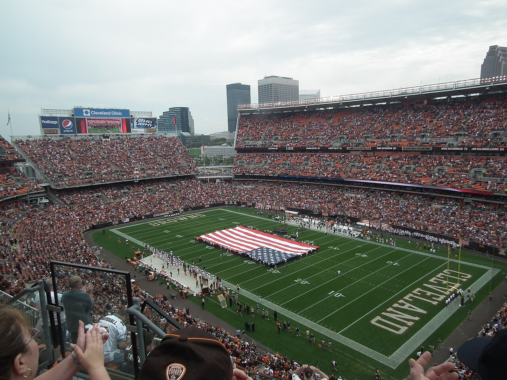
Huntington Bank Field in Cleveland, where the Browns host Pittsburgh on Thursday night. Photo: Erik Drost, CC BY 2.0, via Wikimedia Commons.
The play: Browns +3 at -130, 3 units to win, 3.9 units at risk. Pittsburgh visits Cleveland on Thursday Night Football, kickoff 5:15 PM Pacific.
Both teams come in 2 and 1. Cleveland lost the opener 34 to 10 in Jacksonville, then won 23 to 19 at Tampa Bay and 21 to 18 at home against Carolina. Pittsburgh beat Atlanta 20 to 13, managed just 3 points in a 20 to 3 loss at New England, then edged Cincinnati 30 to 27.
The key is the number. Most books are dealing Pittsburgh by 2.5 with a total in the high 30s, so this is a game that figures to be decided by a field goal. I paid up to own the full 3. In a low scoring division game at home, that hook is worth the extra juice to me.
Injuries cut both ways, and I'll say it plainly. ESPN lists Cleveland without guard Teven Jenkins, center Elgton Jenkins and linebacker Jeremiah Owusu-Koramoah, which is a real hit up front. Pittsburgh has running back Rico Dowdle out and cornerback Jalen Ramsey questionable. I'm not getting a clean game, I'm getting a short field goal number on a home dog.
Play
Price
To win
Risk
Break even
Kickoff PT
Browns +3
-130
3 units
3.9 units
56.52%
5:15 pm
-130 was the best price I could find for the full 3 at 2:30 PM Pacific, at Bovada's alternate lines. The standard number was Browns +2.5 at -101 at DraftKings and even money at Bovada.
That's the play: Browns +3 at -130, 3 units to win. It's logged before kickoff on the public record at TrustMyRecord and graded there, win or lose. Scores, records and injuries are from ESPN, read at 2:35 PM Pacific on October 1.
MLB Pick: Red Sox Team Total Under 3.5 vs Yankees, AL Wild Card Game 2, September 30, 2026
Posted: 3:00 PM PDT September 30, 2026
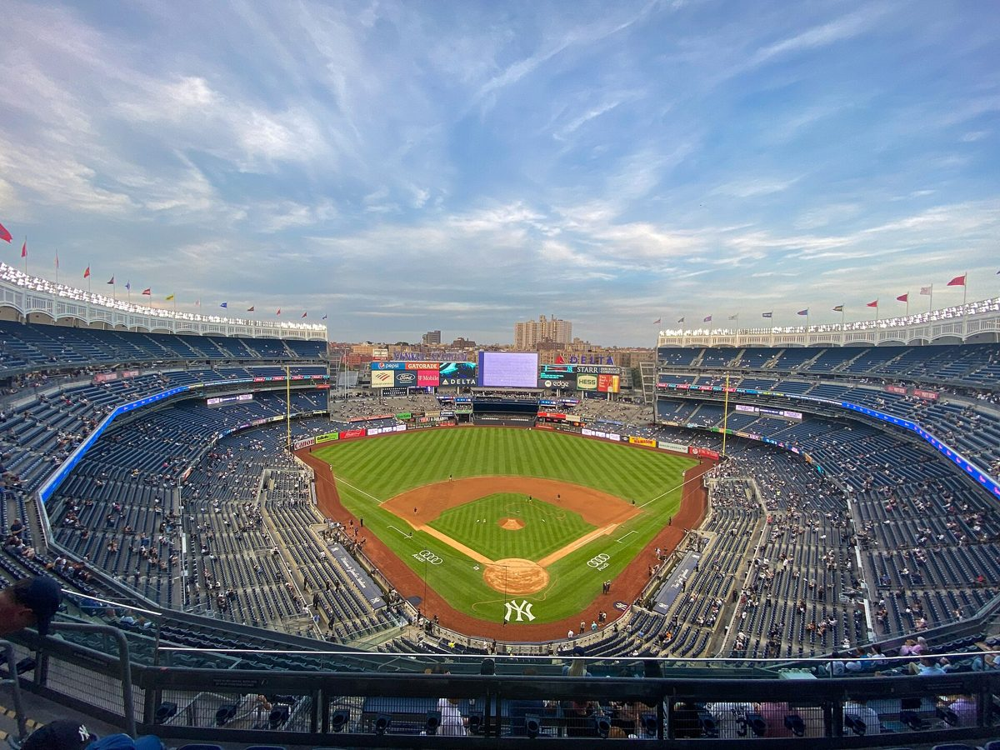
Yankee Stadium, where the Yankees host Game 2 on Wednesday night. Photo: Andrew nyr, CC BY-SA 4.0, via Wikimedia Commons.
The play: Red Sox team total under 3.5 runs at -154, 3 units to win, about 4.62 units at risk. Game 2 of the AL Wild Card Series is Wednesday at Yankee Stadium, 5:00 PM Pacific.
Boston didn't score in Game 1. The Yankees won it 9 to 0, and the Red Sox need to win tonight just to force a Game 3.
Max Fried starts for New York. He made 20 starts this season with a 2.80 ERA and a 0.99 WHIP, and he struck out 104 in 112.2 innings. That WHIP is the number I care about here: he doesn't put many runners on, and a team that can't string baserunners together has a hard time getting to four.
Boston's offense was middle of the pack at best. The Red Sox scored 689 runs in 162 games, 23rd of 30 teams, with a .716 team OPS. That works out to a little over four runs a game against the whole league, not against a starter like Fried at home in October.
The risk is real, and I'll say it. Boston actually hit lefties a bit better than its season line, a .734 OPS, and Fried gave up 4 earned runs to Tampa Bay in his last start on September 22. One bad inning ruins an under. I still like the number.
Play
Price
To win
Risk
Break even
First pitch PT
Red Sox team total under 3.5
-154
3 units
4.62 units
60.63%
5:00 pm
-154 was the best price I could find at 1:30 PM Pacific: DraftKings and Pinnacle both had it there, FanDuel was -164, and Bovada only offered 2.5.
That's the play: Red Sox team total under 3.5 at -154, 3 units to win. It's logged before first pitch on the public record at TrustMyRecord and graded there, win or lose. Pitching lines, team stats and the Game 1 score are from MLB Stats, read at 2:57 PM Pacific on September 30.
MLB Pick: Braves Moneyline vs Phillies, NL Wild Card Game 2, September 30, 2026
Posted: 10:15 AM PDT September 30, 2026
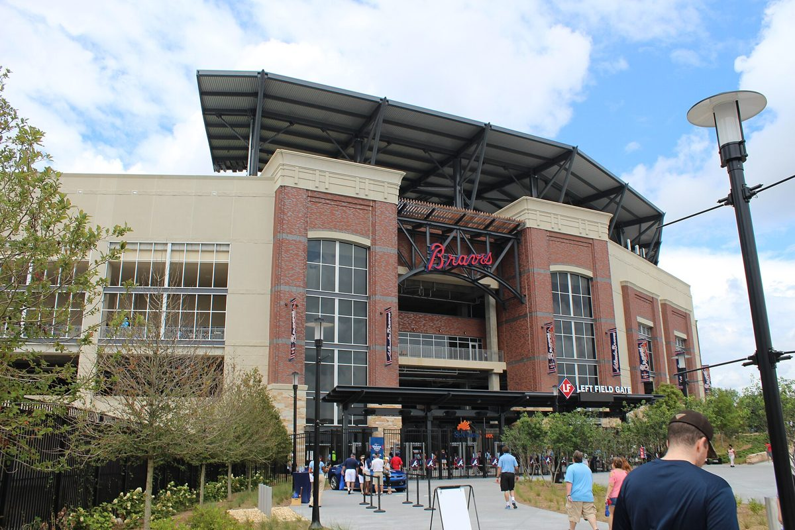
Truist Park, where the Braves host Game 2 on Wednesday. Photo: Jeffrey Hayes, CC BY 2.0, via Wikimedia Commons.
The play: Braves moneyline at +102, 1.5 units risked to win 1.53. Game 2 of the NL Wild Card Series is Wednesday at Truist Park, 11:00 AM Pacific on NBC.
Atlanta won Game 1 on Tuesday, 5 to 3, and leads the best of three series 1 and 0. Now the Braves are an underdog at home, and I'll take that.
Tyler Mahle gets the ball. His season line is ordinary, 7 and 10 with a 3.99 ERA, a 1.23 WHIP and 137 strikeouts in 149 innings. But look at what he did to this exact lineup this month: 6 scoreless innings against Philadelphia on September 6, then 7 innings with 1 earned run on September 12. That's 13 innings and 1 earned run against the team he faces today.
Cristopher Sanchez is the reason Philadelphia is favored, and I won't pretend otherwise. He went 18 and 7 with a 2.91 ERA and 231 strikeouts in 207 innings, and he struck out 10 Rays over 7 innings in his last start. He's also been hittable lately: 6 earned runs against Houston on September 9 and 5 against Washington on September 15.
The Braves went 52 and 29 at home and finished 94 and 68. The Phillies were 88 and 74. With the better team at home, up a game, I don't need to lay a price.
Play
Price
Risk
To win
Break even
First pitch PT
Braves ML vs Phillies
+102
1.5 units
1.53 units
49.50%
11:00 am
DraftKings has Atlanta at -103, per ESPN, so +102 is a better number than the market.
That's the play: Braves moneyline at +102, 1.5 units risked. It's logged before first pitch on the public record at TrustMyRecord and graded there, win or lose. Records, the Game 1 score and the market price are from ESPN; pitching lines and game logs are from MLB Stats, read at 10:09 AM Pacific on September 30.
MLB Pick: Padres Moneyline vs Cubs, NL Wild Card Game 1, September 29, 2026
Posted: 2:35 PM PDT September 29, 2026
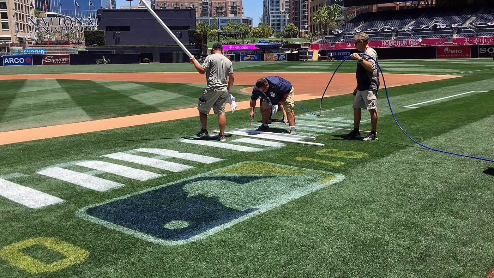
Petco Park, where the Padres host the Cubs tonight.
The play: Padres moneyline at -122, 2 units to win, 2.44 units at risk. Game 1 against the Cubs is tonight at Petco Park, 7:00 PM Pacific.
Michael King gets the ball at home. He won 12 games with a 3.21 ERA and 159 strikeouts, per ESPN, and he's the arm San Diego wanted lined up for this game. Chicago counters with Matthew Boyd.
Home field matters with this team. The Padres went 51 and 30 at Petco Park and finished 91 and 71. The Cubs were 43 and 38 on the road. San Diego also comes in hot, winning 4 of its last 5, while Chicago lost 3 of its last 5.
Here's the other side, and I won't hide it. The Cubs scored 850 runs this year to San Diego's 722, and Pete Crow Armstrong hit 45 homers with 107 RBIs. That lineup can beat anybody. What I'm betting is King at home against a price that isn't asking much.
Play
Price
To win
Risk
Break even
First pitch PT
Padres ML vs Cubs
-122
2 units
2.44 units
54.95%
7:00 pm
DraftKings has San Diego at -124, per ESPN, so -122 is right at the market.
That's the play: Padres moneyline at -122, 2 units to win. It's logged before first pitch on the public record at TrustMyRecord and graded there, win or lose. Records, pitching numbers and the market price are from ESPN, read at 2:30 PM Pacific on September 29.
NFL Pick: Bears +4 vs Eagles, Monday Night Football, September 28, 2026
Posted: 4:25 PM PDT September 28, 2026
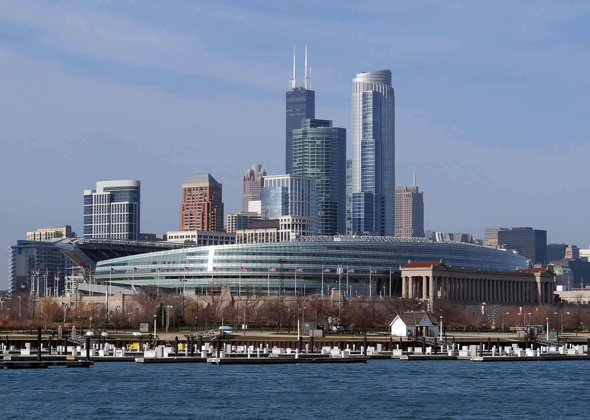
Soldier Field, where the Bears host the Eagles tonight. Photo: John Picken, CC BY 2.0, via Wikimedia Commons.
The play: Bears +4 at -115, 3 units to win, 3.45 units at risk. The Eagles visit Chicago on Monday Night Football, 5:15 PM Pacific on ABC and ESPN.
Chicago runs the ball better than anybody right now. The Bears lead the NFL at 212.5 rushing yards a game, per ESPN, and D'Andre Swift has 169 yards and 3 touchdowns through two games. They put up 291 on the ground in a 59 to 37 win at Carolina.
The defense showed up last week too. Montez Sweat and company held Minnesota to 9 points. Philadelphia is 2 and 0, but both wins came by 4 points or fewer, 24 to 22 over Washington and 24 to 20 at Tennessee, and the Eagles still don't have a takeaway. That's 32nd in the league.
Here's the part I won't hide. ESPN lists Caleb Williams out with a hamstring injury, and that's a real hit. The Eagles are also without tight end Dallas Goedert. With the Bears quarterback out, I want every half point I can get.
Play
Price
To win
Risk
Break even
Kickoff PT
Bears +4 vs Eagles
-115
3 units
3.45 units
53.49%
5:15 pm
DraftKings has Chicago +3.5, per ESPN. At +4 a 3 point Eagles win still cashes, and a 4 point Eagles win is a push. Philadelphia's two wins came by 2 and by 4.
That's the play: Bears +4 at -115, 3 units to win. It's logged before kickoff on the public record at TrustMyRecord and graded there, win or lose. Stats, injuries and the line are from ESPN, read at 4:10 PM Pacific.
MLB Pick: Braves Moneyline vs Phillies, NL Wild Card Game 1, September 29, 2026
Posted: 1:55 PM PDT September 28, 2026
Truist Park, where the Braves host Game 1 on Tuesday. Photo: Jeffrey Hayes, CC BY 2.0, via Wikimedia Commons.
The play: Braves moneyline at -185, 2 units to win, 3.7 units at risk. Game 1 of the NL Wild Card Series is Tuesday at Truist Park, 11:00 AM Pacific on NBC.
This one starts with Chris Sale. He went 14 and 9 with a 2.16 ERA and a 0.98 WHIP, and he struck out 200 in 162.2 innings. Hitters batted .215 against him all year, per ESPN. In a short series, Game 1 is the one where you want the ace on the mound at home, and that's exactly what Atlanta has.
The Braves were 52 and 29 at Truist Park and won the season series from Philadelphia 9 and 4. They scored 742 runs and allowed 626. The Phillies scored 713 and allowed 698, so the run differential gap between these teams is about 100 runs over a full season.
Philadelphia also limped in. They lost four straight to Milwaukee and Tampa Bay last week and scored 3 runs total in those four games, then beat the Rays 7 to 3 on Sunday to clinch. That's a team that got in, not a team that's rolling.
I'll be straight about the other side. Jesus Luzardo is a real problem: 14 and 5, 2.86 ERA, 221 strikeouts in 179.2 innings. Kyle Schwarber hit 45 homers. And the Braves dropped 3 of their last 5, including a 5 to 3 loss in Miami on Sunday. This isn't a lock, it's a price I like.
Play
Price
To win
Risk
Break even
First pitch PT
Braves ML vs Phillies
-185
2 units
3.7 units
64.91%
11:00 am
DraftKings has Atlanta at -198, per ESPN. At -185 we're paying less than the market for the better pitcher, the better team and the home park.
That's the play: Braves moneyline at -185, 2 units to win. It's logged before first pitch on the public record at TrustMyRecord and graded there, win or lose. Records, pitching lines and the market price are from ESPN, read at 1:50 PM Pacific on September 28.
MLB Pick: Yankees Moneyline vs Red Sox, AL Wild Card Game 1, September 29, 2026
Posted: 1:55 PM PDT September 28, 2026
Yankee Stadium, where the Yankees host Game 1 on Tuesday night. Photo: Andrew nyr, CC BY-SA 4.0, via Wikimedia Commons.
The play: Yankees moneyline at -135, 1.5 units to win, about 2.03 units at risk. Game 1 of the AL Wild Card Series is Tuesday at Yankee Stadium, 5:00 PM Pacific on NBC.
Cam Schlittler is the reason. He made 33 starts, went 14 and 6 with a 1.95 ERA and a 0.92 WHIP, and struck out 239 in 193.2 innings, per ESPN. That's as good a Game 1 starter as anybody has in this round.
Boston counters with rookie lefty Payton Tolle. He's been solid, 9 and 6 with a 3.03 ERA and 171 strikeouts in 148.2 innings, but the Red Sox are giving him the ball in the Bronx because Garrett Crochet is on the 60 day IL with a lat strain.
The full season numbers lean New York too. The Yankees allowed 601 runs with a 3.24 staff ERA, and they hit 223 home runs. Boston allowed 611 with a 3.54 ERA and hit 163. New York's run differential was plus 138, Boston's plus 78.
Here's the part I don't love. ESPN's injury report lists Aaron Judge on the 10 day IL with a right calf strain, and that's a big bat to be without. The season series was basically even, 7 and 6 Yankees. So this bet leans on Schlittler, and I'm fine with that.
Play
Price
To win
Risk
Break even
First pitch PT
Yankees ML vs Red Sox
-135
1.5 units
2.03 units
57.45%
5:00 pm
DraftKings has the Yankees at -142, per ESPN, so -135 is a better number than the market with the best pitcher in the game on our side.
That's the play: Yankees moneyline at -135, 1.5 units to win. It's logged before first pitch on the public record at TrustMyRecord and graded there, win or lose. Records, pitching lines, injuries and the market price are from ESPN, read at 1:50 PM Pacific on September 28.
NFL Pick: Broncos Moneyline vs Rams, Sunday Night Football, September 27, 2026
Posted: 4:58 PM PDT September 27, 2026
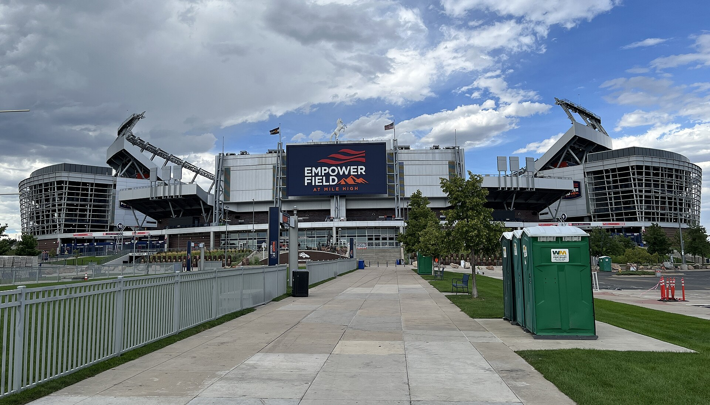
Empower Field at Mile High, where the Broncos host the Rams tonight. Photo: Troutfarm27, CC BY-SA 4.0, via Wikimedia Commons.
The play: Broncos moneyline at +110, 2 units risked to win 2.2. The Rams visit Denver on Sunday Night Football, 5:20 PM Pacific on NBC.
Both teams are 1 and 1. Here's what I keep coming back to: the Rams haven't played a road game yet. They lost 27 to 7 to the 49ers in Melbourne, Australia, a neutral site game where the Rams were the designated home team, and beat the Giants 28 to 6 in Los Angeles. Tonight is their first road game of the season, and it's a night game at altitude.
The Rams' pass rush hasn't shown up either. They have 1 sack in two games, tied for 30th in the league, per ESPN. Denver threw for 288 yards against Jacksonville last week and won 20 to 13, and a clean pocket is the thing their offense needs most.
I'll be straight about the other side. ESPN's model likes the Rams, and Denver's offense ranks 26th in yards per game. The Bet Legend Pro database has the Broncos 9 and 3 against the spread as home underdogs since 2021, but only 5 and 7 straight up, 12 games from January 2021 through January 2026. They play these games close, and that's the bet: a near pick'em priced at plus money.
Play
Price
Risk
To win
Break even
Kickoff PT
Broncos ML vs Rams
+110
2 units
2.2 units
47.62%
5:20 pm
DraftKings has the Rams favored by just 1.5 with a total of 44.5, so this is close to a coin flip, and +110 pays more than even money on it.
That's the play: Broncos moneyline at +110, 2 units. It's logged before kickoff on the public record at TrustMyRecord and graded there, win or lose. Records, box scores, ranks and the line are from ESPN, read at 4:50 PM Pacific.
NFL Pick: Rams Team Total Under 28.5 vs Broncos, September 27, 2026
Posted: 4:58 PM PDT September 27, 2026
The play: Rams team total under 28.5 at -340, 2 units to win, 6.8 units at risk. Same Sunday night game, 5:20 PM Pacific on NBC.
The Rams are scoring 17.5 points a game, 22nd in the NFL. They put up 7 against San Francisco and 28 against the Giants, and 28 still stays under this number. Denver held Jacksonville to 13 last week. The full game total at DraftKings is 44.5, so 29 Rams points would mean the Rams take almost two thirds of the expected scoring on the road.
Play
Price
To win
Risk
Break even
Rams team total under 28.5
-340
2 units
6.8 units
77.27%
That's the play: Rams under 28.5 at -340, 2 units to win. It's tracked publicly at TrustMyRecord, win or lose.
MLB Pick: Blue Jays vs Reds Under 9, September 27, 2026
Posted: 10:50 AM PDT September 27, 2026
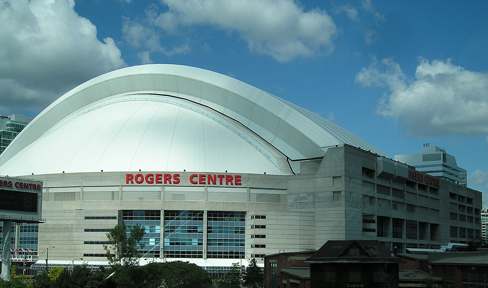
Rogers Centre in Toronto, where the Blue Jays host the Reds today. Photo: Wikimedia Commons, CC BY-SA 3.0.
The play: Blue Jays and Reds Under 9 at -130, 2 units to win, 2.6 units at risk. Cincinnati at Toronto starts at 12:07 PM Pacific from Rogers Centre, with Brandon Williamson facing Max Scherzer.
The market total is 8.5. I'm paying up to take the alternate 9, so a 5 to 4 final is a push instead of a loss. The reason is simple: the Toronto bats have gone quiet, and today the weather is working against the hitters too.
Play
Price
To win
Risk
Break even
First pitch PT
Blue Jays/Reds Under 9
-130
2 units
2.6 units
56.52%
12:07 pm
Toronto isn't scoring
The Blue Jays have scored 30 runs in their last 10 games. That's 3 a night. For the season, they're at 643 runs in 161 games with a .691 team OPS. Over those same 10 games, their totals landed at 7.8 runs a game, and 7 of the 10 finished at 8 or fewer.
Williamson has been stingy lately
Williamson outing
Innings
Earned runs
Sep 13
4.0
1
Sep 17
2.0
1
Sep 22
6.0
0
Williamson has allowed 2 earned runs over his last 12 innings. His last start was 6 scoreless innings. Opponents are hitting .238 against him this season.
The wind is blowing in
The MLB game feed lists 73 degrees with a 13 mph wind blowing in from center field. If the roof is open, that wind knocks down fly balls, and it's the biggest reason I'm comfortable laying -130 for the extra half run.
What could beat this ticket
Scherzer's ERA. He's at 6.14 with 15 homers allowed in 77.2 innings, and he gave up 4 runs in his last start. If the Reds get to him early, 9 comes up fast.
The roof. If they close it, the wind is gone.
That's the play: Blue Jays and Reds Under 9 at -130, 2 units to win. It's logged before first pitch on the public record at TrustMyRecord and graded there, win or lose. Stats are from the MLB Stats API for the 2026 season through September 26. The 8.5 total is DraftKings, and the Under 9 price is from Bovada's alternate lines, both read at 10:40 AM Pacific.
MLB Pick: A's vs Astros Over 10, September 27, 2026
Posted: 10:50 AM PDT September 27, 2026
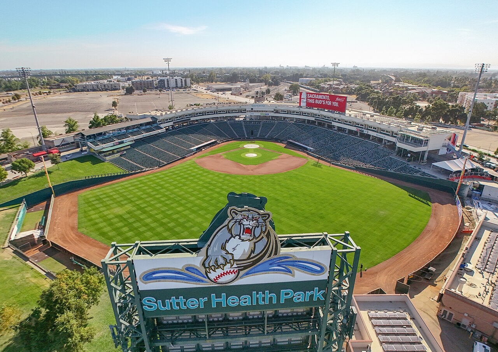
Sutter Health Park in West Sacramento, where the A's host the Astros today. Photo: Quintin Soloviev, CC BY 4.0, via Wikimedia Commons.
The play: A's and Astros Over 10 at -110, 2 units to win, 2.2 units at risk. Houston at the Athletics starts at 12:05 PM Pacific from Sutter Health Park, with Peter Lambert going for Houston and Seth Johnson for the A's.
This is a pitching staff that has allowed 928 runs, playing at home in a park where September has been a slugfest.
Play
Price
To win
Risk
Break even
First pitch PT
A's/Astros Over 10
-110
2 units
2.2 units
52.38%
12:05 pm
The A's can't keep runs off the board
The Athletics have allowed 928 runs in 161 games, 5.76 a game, with a 5.48 team ERA and 246 homers allowed. Over their last 10 games they've given up 67 runs. Seth Johnson carries a 6.19 ERA and a 1.69 WHIP in 32 innings, and he hasn't started a game all year, so expect plenty of that bullpen.
September in Sacramento
The A's have played 11 home games this month. Their totals: 11, 6, 2, 11, 20, 15, 16, 10, 12, 11 and 15. That's 11.7 runs a game, and 8 of the 11 went over 10. Today's forecast has 70 degrees with a 6 mph wind blowing out to center.
Houston's games have been climbing
The last four Astros games finished with 11, 12, 11 and 15 runs. Across their last 10, they've averaged 9.4 total runs. Houston has 225 home runs this season.
What could beat this ticket
Lambert. He's been solid, with a 3.87 ERA and a 1.26 WHIP over 153.2 innings. If he goes deep and holds the A's down, Houston has to do most of the scoring.
A flat A's lineup. They've scored just 42 runs in their last 10.
That's the play: A's and Astros Over 10 at -110, 2 units to win. It's logged before first pitch on the public record at TrustMyRecord and graded there, win or lose. Stats and weather are from the MLB Stats API for the 2026 season through September 26, read at 10:40 AM Pacific.
NFL Pick: Buccaneers +1.5 vs Vikings, September 27, 2026
Posted: 9:58 AM PDT September 27, 2026
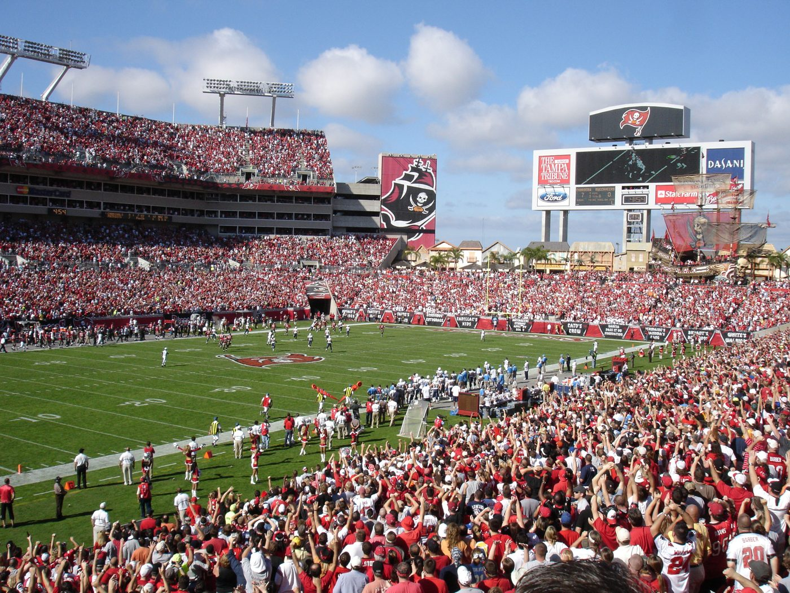
Raymond James Stadium in Tampa, where the Buccaneers host the Vikings today. Photo: AHeneen, CC BY-SA 4.0, via Wikimedia Commons.
The play: Buccaneers +1.5 at -112, 1.5 units to win, 1.68 units at risk. Minnesota at Tampa Bay kicks at 1:05 PM Pacific on FOX from Raymond James Stadium.
Minnesota is 2 and 0 and Tampa Bay is 0 and 2, and the market has made the road team a small favorite. I'll take the home team and the point and a half. A one point Buccaneers loss still cashes.
Play
Price
To win
Risk
Break even
Kickoff PT
Buccaneers +1.5 vs Vikings
-112
1.5 units
1.68 units
52.83%
1:05 pm
At -112 the ticket needs to cash 52.83 percent of the time. ESPN's matchup predictor gives Tampa Bay a 44.7 percent chance to win outright, and the extra point and a half turns a one point loss into a win.
That's the play: Buccaneers +1.5 at -112, 1.5 units to win. It's logged before kickoff on the public record at TrustMyRecord and graded there, win or lose. Records and the predictor are from ESPN's game page, and the line is from DraftKings, read at 9:55 AM Pacific.
NFL Pick: Jaguars Moneyline vs Patriots, September 27, 2026
Posted: 9:58 AM PDT September 27, 2026
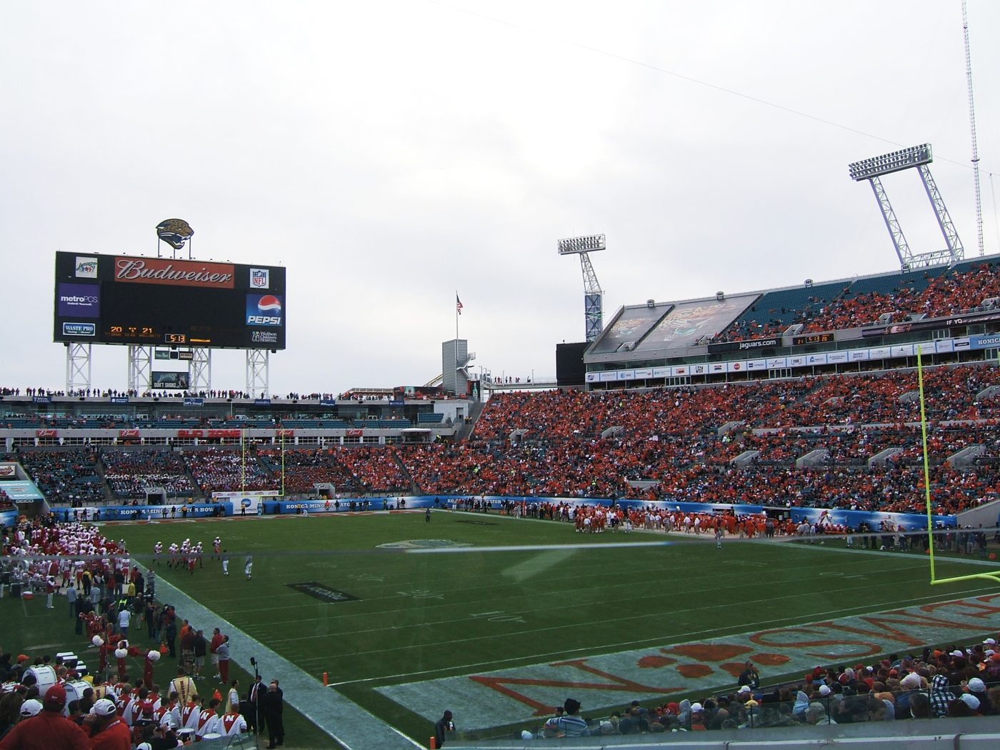
EverBank Stadium in Jacksonville, where the Jaguars host the Patriots today. Photo: Richmond96, Public domain, via Wikimedia Commons.
The play: Jaguars moneyline at -160, 2 units to win, 3.2 units at risk. New England at Jacksonville kicks at 10:00 AM Pacific on CBS from EverBank Stadium.
Both teams are 1 and 1. Jacksonville is at home, and ESPN's matchup predictor makes the Jaguars a 56.6 percent winner. I just want the Jaguars to win the game.
Play
Price
To win
Risk
Break even
Kickoff PT
Jaguars ML vs Patriots
-160
2 units
3.2 units
61.54%
10:00 am
At -160 the ticket needs to cash 61.54 percent of the time. The best price I found was -160 at DraftKings; Bovada was hanging -170.
That's the play: Jaguars moneyline at -160, 2 units to win. It's logged before kickoff on the public record at TrustMyRecord and graded there, win or lose. Records and the predictor are from ESPN's game page, read at 9:55 AM Pacific.
NFL Pick: Texans -1 at Colts, September 27, 2026
Posted: 9:58 AM PDT September 27, 2026
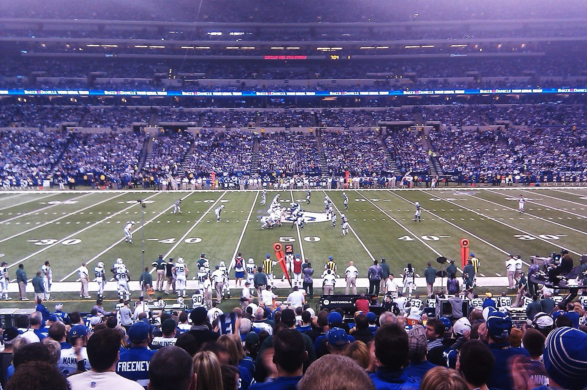
Lucas Oil Stadium in Indianapolis, where the Colts host the Texans today. Photo: No machine-readable author provided. VaBthang4~commonswiki assumed (based on copyright claims)., CC BY-SA 3.0, via Wikimedia Commons.
The play: Texans -1 at -115, 2 units to win, 2.3 units at risk. Houston at Indianapolis kicks at 10:00 AM Pacific on CBS from Lucas Oil Stadium.
Two 0 and 2 division teams, and somebody leaves this one 0 and 3. ESPN's matchup predictor has Houston at 53.3 percent on the road. At -1 a one point Texans win is a push, not a loss.
Play
Price
To win
Risk
Break even
Kickoff PT
Texans -1 at Colts
-115
2 units
2.3 units
53.49%
10:00 am
That's the play: Texans -1 at -115, 2 units to win. It's logged before kickoff on the public record at TrustMyRecord and graded there, win or lose. Records and the predictor are from ESPN's game page, and the line is from Bovada, read at 9:55 AM Pacific.
NFL Pick: Saints Moneyline vs Raiders, September 27, 2026
Posted: 1:20 AM PDT September 27, 2026
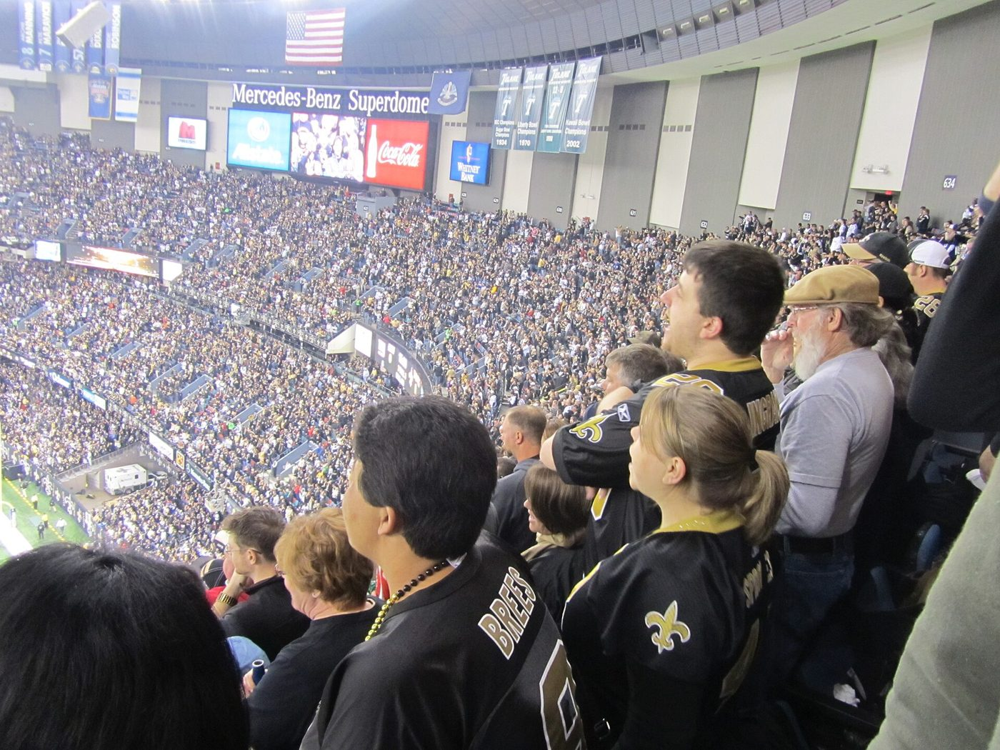
The Superdome in New Orleans, where the Saints play their home opener against the Raiders today. Photo: Coastie Wife 2008, CC BY 2.0, via Wikimedia Commons.
The play: Saints moneyline at -185, 3 units to win, 5.55 units at risk. Las Vegas at New Orleans kicks at 1:25 PM Pacific on CBS from Caesars Superdome.
The Saints have opened with two road games, a one point loss in Detroit and a win in Baltimore, and now they finally get to play in the dome. The Raiders are 2 and 0, but they've done it on turnovers more than on offense. I'll lay the price with the better offense at home.
Play
Price
To win
Risk
Break even
Kickoff PT
Saints ML vs Raiders
-185
3 units
5.55 units
64.91%
1:25 pm
At -185 the ticket needs to cash 64.91 percent of the time. ESPN's matchup predictor has New Orleans at 62.7 percent, so the model is right around the number, a little short of it. This is a bet that the yardage gap between these offenses shows up once the turnover luck evens out.
Tyler Shough has the Saints moving the ball
Saints game
Result
Total yards
Third downs
Turnovers
Shough
at Detroit
Lost 31 to 30
469
8 of 17
3
35 of 56, 410, 3 TD, 2 INT
at Baltimore
Won 24 to 17
298
8 of 15
0
27 of 34, 252, 1 TD
Shough is 62 of 90 for 662 yards with 4 touchdowns through two road starts, and he cleaned it up in Baltimore with zero turnovers. The Saints are 16 of 32 on third down, which is how you sustain drives, and they held the ball more than 31 minutes in both games. They put 30 on Detroit on the road. Coming home to the dome is only going to help.
The Raiders are 2 and 0 on takeaways
Raiders game
Result
Total yards
Rushing
Third downs
Takeaways
vs Miami
Won 27 to 13
290
130 on 37
5 of 13
2
at LA Chargers
Won 26 to 14
305
57 on 29
4 of 14
3
Las Vegas hasn't cracked 310 yards in either game and it's 9 of 27 on third down. The two wins came from forcing 5 turnovers, including 2 Justin Herbert interceptions in Los Angeles. Ashton Jeanty has 150 yards on 44 carries, 3.4 a pop, and he managed 48 yards on 21 carries last week. Kirk Cousins has 6 touchdown passes, but he's also thrown 3 interceptions, and Brock Bowers is listed as questionable.
What could beat this ticket
Turnovers again. The Saints gave it away 3 times in Detroit, and the Raiders live on takeaways. If Shough gets loose with the ball, this becomes a coin flip.
Cousins in the red zone. He's thrown 6 touchdowns on only 59 attempts. Las Vegas is efficient when it gets close.
The Saints' run defense. Detroit ran for 165 yards on them in week one. If Jeanty finally breaks out, the Raiders can control the clock.
That's the play: Saints moneyline at -185, 3 units to win. It's logged before kickoff on the public record at TrustMyRecord and graded there, win or lose. All stats come from ESPN box scores for the 2026 season through September 20; the price is from Bovada and DraftKings and the predictor is from ESPN's game page, read at 1:10 AM Pacific.
NFL Pick: Giants vs Titans Under 38.5, September 27, 2026
Posted: 1:00 AM PDT September 27, 2026
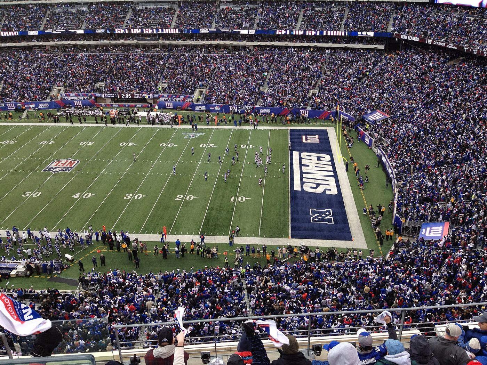
MetLife Stadium in East Rutherford, where the Giants host the Titans today. Photo: MjaMes1408, CC BY 2.0, via Wikimedia Commons.
The play: Giants and Titans Under 38.5 at -130, 3 units to win, 3.9 units at risk. Tennessee at New York kicks at 10:00 AM Pacific on CBS from MetLife Stadium.
This is a game between two offenses that can't get out of their own way right now. The Giants lost Jaxson Dart to injured reserve with a knee injury, so it's Jameis Winston under center. Tennessee is 0 and 2 and has scored 30 points combined. The market is sitting at 37.5 and I'm happy to take the extra point on the alternate line.
Play
Price
To win
Risk
Break even
Kickoff PT
Giants/Titans Under 38.5
-130
3 units
3.9 units
56.52%
10:00 am
At -130 the ticket needs to cash 56.52 percent of the time. Paying up for the extra point buys me 38, and that's a real number in low scoring NFL games. A 21 to 17 or 24 to 14 final loses at 37.5 and cashes at 38.5.
The Giants without Dart looked lost
Giants game
Result
Total yards
Third downs
Red zone
QB line
vs Dallas
Won 28 to 20
394
9 of 11
4 of 4
Dart 23 of 29, 230, 3 TD
at LA Rams
Lost 28 to 6
182
3 of 14
0 of 2
Winston 11 of 27, 111, 1 INT
That's the whole case in two rows. With Dart, the Giants were efficient and ran 37 times for 165 yards. With Winston, they gained 182 yards, went 3 of 14 on third down, got into the red zone twice and came away with nothing. Winston completed 11 of 27 throws for 4.1 yards an attempt. Cam Skattebo is still the best thing they have, but he ran for 36 yards on 12 carries once the passing game fell apart.
Tennessee can't move it either
Titans game
Result
Total yards
Rushing
Third downs
Time of possession
vs NY Jets
Lost 23 to 10
195
68 on 14
4 of 12
21:14
vs Philadelphia
Lost 24 to 20
291
122 on 29
6 of 13
23:35
Cam Ward is 32 of 52 for 323 yards with 1 touchdown and no interceptions, and he's been sacked 5 times. That's careful, but it isn't explosive: 6.2 yards an attempt. The Titans have 486 total yards in two games and they've lost the possession battle badly both weeks. Both of their games landed at 33 and 44, and the 44 needed a Philadelphia offense that's far better than what the Giants will put on the field today.
Why the pace points under
The Giants' win over Dallas had only 7 drives per team. The Titans' loss to Philadelphia had 8 and 9. Both teams want to run it and shorten the game, and both have backs they trust in Skattebo and Tony Pollard. Two conservative offenses, one of them with a backup quarterback, is how you end up with a lot of punts and field goal tries.
What could beat this ticket
Turnovers and short fields. Winston threw a pick at LA and he's always had a gunslinger streak. A couple of giveaways in plus territory can hand out cheap points.
The Giants' defense in Los Angeles. The Rams put up 481 yards on them. If Ward finds the same holes, Tennessee could get over 20 by itself.
A defensive or special teams score. In a total this low, one return touchdown does a lot of damage.
That's the play: Giants and Titans Under 38.5 at -130, 3 units to win. It's logged before kickoff on the public record at TrustMyRecord and graded there, win or lose. All stats come from ESPN box scores for the 2026 season through September 22; the 37.5 consensus is from DraftKings and the 38.5 alternate price is from Bovada, both read at 12:50 AM Pacific.
College Football Pick: West Virginia -1.5 vs Oklahoma State, September 26, 2026
Posted: 3:05 PM PDT September 26, 2026
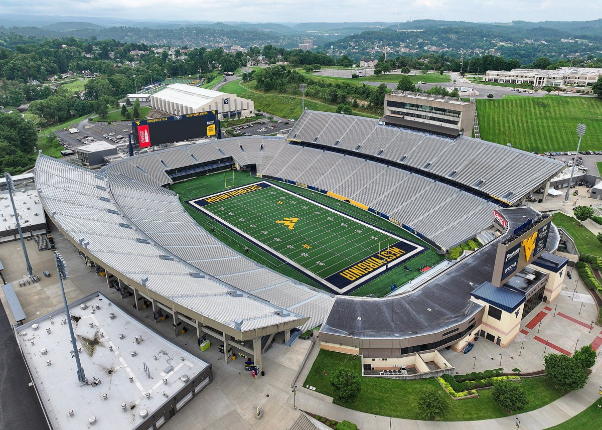
Mountaineer Field at Milan Puskar Stadium in Morgantown, where West Virginia hosts Oklahoma State tonight. Photo: Quintin Soloviev, CC BY 4.0, via Wikimedia Commons.
The play: West Virginia -1.5 at -110, 3 units to win, 3.3 units at risk. Oklahoma State at West Virginia kicks at 4:00 PM Pacific on FS1 from Milan Puskar Stadium in Morgantown.
West Virginia is 3 and 0 and it has won every one of those games the same way: by running the ball down people's throats. Oklahoma State is 2 and 1 and it can't stop giving the ball away. Laying a point and a half at home with the team that controls the clock is a spot I'll take all day.
Play
Price
To win
Risk
Break even
Kickoff PT
West Virginia -1.5 vs Oklahoma State
-110
3 units
3.3 units
52.38%
4:00 pm
At -110 the ticket needs to cash 52.38 percent of the time. ESPN's matchup predictor gives West Virginia a 58.5 percent chance to win the game. The line is basically asking the home team to win, and the predictor likes them to do it.
West Virginia's ground game is the whole story
West Virginia game
Result
Rushing
Total yards
Turnovers
vs Coastal Carolina
Won 31 to 24
281 on 61
413
1
vs UT Martin (FCS)
Won 52 to 7
316 on 51
525
1
at Virginia
Won 38 to 27
247 on 51
437
0
That's 844 rushing yards on 163 carries, 5.2 a pop, and 281 a game. Michael Hawkins Jr. has turned into the engine of it. He ran for 96 yards and 2 touchdowns against UT Martin and 123 yards and 3 touchdowns at Virginia, and he's 26 of 38 passing for 477 yards with 5 touchdowns and no interceptions. Cam Cook carried it 30 times for 142 yards and 2 scores in the opener. West Virginia has turned it over twice all season.
Oklahoma State keeps handing the ball over
Oklahoma State game
Result
Total yards
Turnovers
Third downs
at Tulsa
Lost 24 to 10
368
4
5 of 16
vs Oregon
Won 39 to 31
554
2
5 of 17
vs Murray State (FCS)
Won 59 to 0
662
1
4 of 7
Seven turnovers in three games, and Drew Mestemaker has thrown 4 interceptions. The Oregon win was real, I'm not going to pretend otherwise, but they gave it away twice even in that one, and they coughed it up four times in a 14 point loss at Tulsa. On the road against a team that can shorten the game on the ground, every giveaway gets magnified.
What could beat this ticket
Mestemaker's arm. He's 75 of 114 for 882 yards and 8 touchdowns, including 20 of 22 for 324 and 5 scores against Murray State. If West Virginia can't get to him, he can put up points fast.
West Virginia's pass defense. Coastal Carolina threw for 373 yards in the opener. That's the side of the ball Oklahoma State will go after.
A short number. At 1.5, this is close to a moneyline bet. A field goal loss loses, and so does a one point win.
That's the play: West Virginia -1.5 at -110, 3 units to win. It's logged before kickoff on the public record at TrustMyRecord and graded there, win or lose. All stats come from ESPN box scores for the 2026 season through September 19; the line is -1.5 across DraftKings and Bovada and the predictor is from ESPN's game page, read at 2:55 PM Pacific.
College Football Pick: Florida -2.5 vs Ole Miss, September 26, 2026
Posted: 1:20 AM PDT September 26, 2026
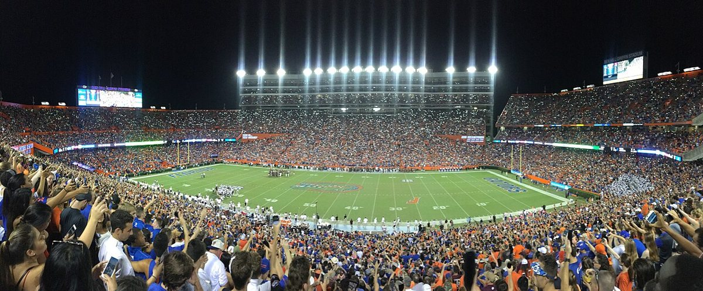
Ben Hill Griffin Stadium in Gainesville, where Florida hosts Ole Miss today. Photo: GATORFAN2525, CC BY-SA 4.0, via Wikimedia Commons.
The play: Florida -2.5 at -150 on the alternate line, 3 units to win, 4.5 units at risk. I moved this from -3.5 at -110 to -2.5 before kickoff. Ole Miss at Florida kicks at 12:30 PM Pacific on ABC from Ben Hill Griffin Stadium in Gainesville.
Two unbeaten SEC teams, both 3 and 0, both 1 and 0 in conference. The difference I keep coming back to is the ground game. Florida runs the ball on everybody. Ole Miss has been living on Trinidad Chambliss's arm, and in its biggest game so far it ran for 63 yards. I'll pay up to get off the hook and take the home team that can lean on people for four quarters.
Play
Price
To win
Risk
Break even
Kickoff PT
Florida -2.5 vs Ole Miss
-150
3 units
4.5 units
60.00%
12:30 pm
At -150 the ticket needs to cash 60 percent of the time to break even. ESPN's matchup predictor has Florida at 53.2 percent to win outright, so I'm not leaning on the model here. The extra price buys protection against a Florida win by exactly 3, and this is a bet that the rushing gap shows up on the scoreboard.
Florida's offense hasn't dipped
Florida game
Result
Total yards
Rushing
Third downs
Yards allowed
vs Florida Atlantic
Won 66 to 21
624
281 on 41
5 of 9
396
vs Campbell (FCS)
Won 52 to 3
514
214 on 30
3 of 9
210
at Auburn
Won 44 to 39
495
243 on 53
7 of 15
373
624, 514, 495. Florida has cleared 490 total yards every week, and the one real road test, at Auburn, is where the run game did the most work: 243 yards on 53 carries. Jadan Baugh has 458 rushing yards and 8 touchdowns on 54 carries across the three games, and he got 26 carries at Auburn with 162 yards and 3 scores. Aaron Philo has been efficient throwing it, 47 of 64 for 721 yards, 6 touchdowns and 2 interceptions.
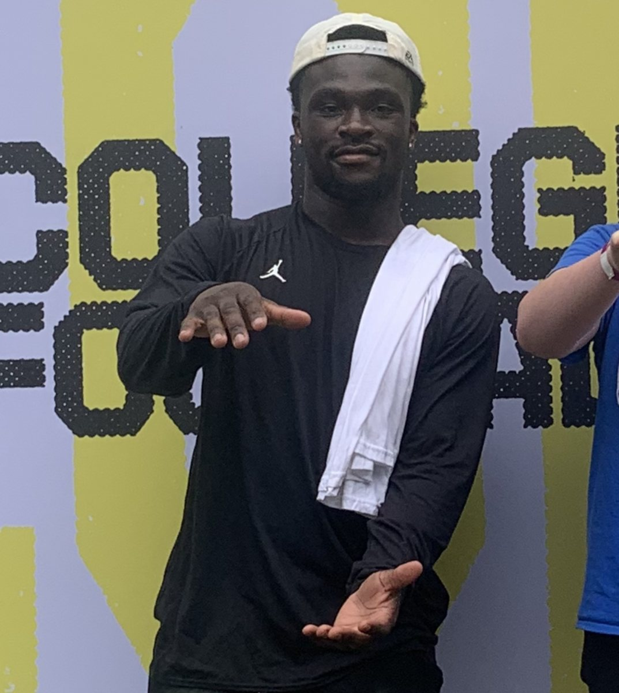
Jadan Baugh has 458 rushing yards and 8 touchdowns through three games. Photo: Versigot, CC BY-SA 4.0, via Wikimedia Commons.
Ole Miss is a passing team right now
Ole Miss game
Result
Total yards
Rushing
Passing
Yards allowed
vs Louisville
Won 41 to 38
488
152 on 41
336
469
vs Charlotte
Won 41 to 9
420
127 on 24
293
322
vs LSU
Won 32 to 24
426
63 on 25
363
330
Chambliss is 77 of 110 for 924 yards with 7 touchdowns and 2 picks, and he threw it 48 times against LSU. That's the offense. The run game has 342 yards on 90 carries, 3.8 a pop, and it got worse as the opponents got better. The defense also gave up 469 yards to Louisville in the opener and needed a 41 to 38 finish to get out of it.
When an offense can't run, it has to be near perfect on third down and in the red zone. Doing that on the road in the Swamp is a lot to ask.
What could beat this ticket
Chambliss. He threw for 363 on LSU and went 23 of 26 against Charlotte. If Florida can't pressure him, he's good enough to win this game by himself.
Florida's pass defense. Auburn threw for 271 and 3 touchdowns, and FAU threw for 276. That's the side of the ball Ole Miss will attack.
The price. Moving to -2.5 means a Florida win by a field goal cashes, but -150 means one loss costs 4.5 units. That's the trade for getting off the hook.
That's the play: Florida -2.5 at -150, 3 units to win. It's logged before kickoff on the public record at TrustMyRecord and graded there, win or lose. All stats come from ESPN box scores for the 2026 season through September 19; the line and the predictor are from ESPN's game page, read at 1:10 AM Pacific.
College Football Pick: Michigan Moneyline vs Iowa, September 26, 2026
Posted: 1:20 AM PDT September 26, 2026
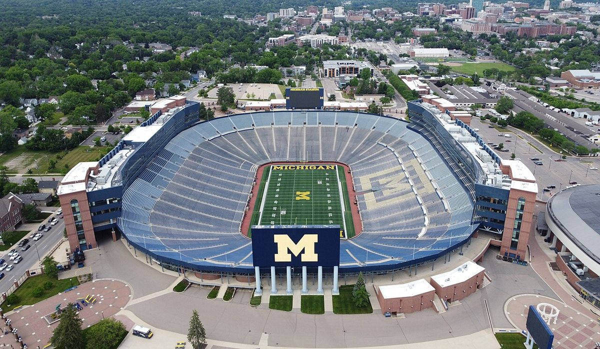
Michigan Stadium in Ann Arbor, where Michigan hosts Iowa today. Photo: Lectrician2, CC BY-SA 4.0, via Wikimedia Commons.
The play: Michigan moneyline at -220, 3 units to win, 6.6 units at risk. Iowa at Michigan kicks at 12:30 PM Pacific on CBS from Michigan Stadium in Ann Arbor.
This is a Big Ten opener between two 3 and 0 teams, and the total sits at 38.5. Everybody expects a rock fight. In a rock fight I want the team whose defense has been the best unit on the field, playing at home, and I don't need to cover a number to get paid. Just win.
Play
Price
To win
Risk
Break even
Kickoff PT
Michigan ML vs Iowa
-220
3 units
6.6 units
68.75%
12:30 pm
Straight talk on the price: -220 breaks even at 68.75 percent, and ESPN's matchup predictor has Michigan at 64.9 percent. So I'm not claiming the model loves it. I'm betting that Michigan's defense against an Iowa offense that has faced one real opponent is worth more than a point spread says. ESPN lists Michigan at -5.5.
Michigan's defense has been the story
Michigan game
Result
Yards allowed
Rush allowed
Third downs allowed
Michigan yards
vs Western Michigan
Won 13 to 12
221
132 on 46
8 of 18
276
vs Oklahoma
Won 17 to 10
289
100 on 29
3 of 13
263
vs UTEP
Won 52 to 17
150
57 on 32
2 of 12
431
Michigan has given up 220 yards a game. Oklahoma, the only Power Four team on the schedule so far, got 289 yards and 10 points in Ann Arbor. Opponents have run for 289 yards on 107 carries, 2.7 a carry, and they've converted 13 of 43 third downs. That's the matchup: Iowa wants to run the ball, and nobody has run it on this defense.
Bryce Underwood hasn't needed to be great. He's 40 of 64 for 504 yards with 3 touchdowns and 1 interception, and he ran for 87 yards and a score against Oklahoma.
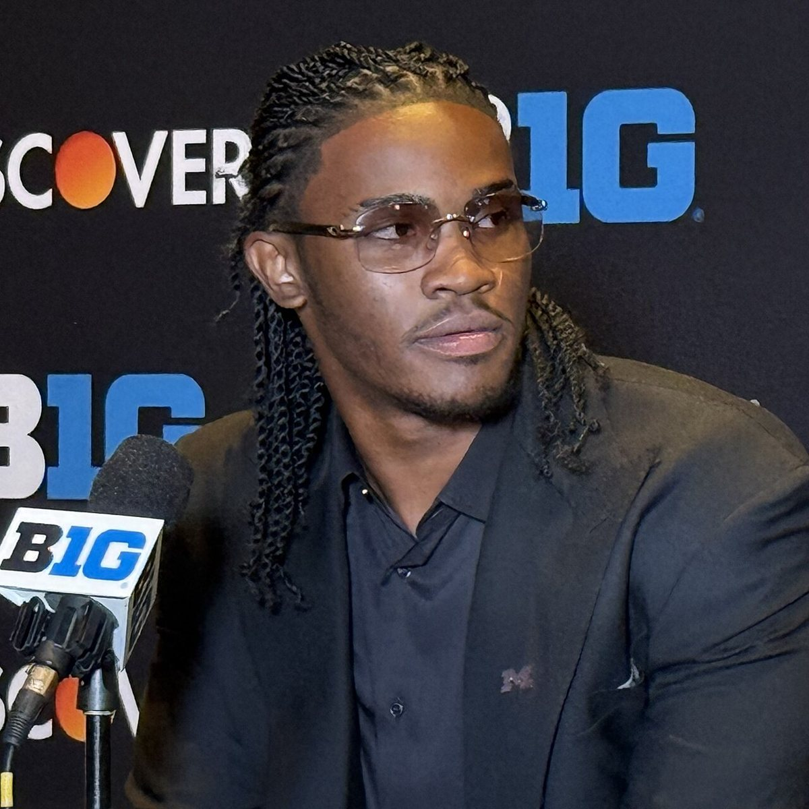
Bryce Underwood at Big Ten Media Days in July 2026. He ran for 87 yards and a touchdown against Oklahoma. Photo: Bobak, CC BY 3.0, via Wikimedia Commons.
Iowa's numbers need context
Iowa game
Result
Total yards
Rushing
Turnovers
Yards allowed
vs Northern Illinois
Won 40 to 0
507
289 on 38
1
120
vs Iowa State
Won 16 to 13
284
93 on 29
0
255
vs Northern Iowa (FCS)
Won 55 to 0
640
422 on 41
0
155
Iowa's season totals look huge, but look at who they came against. 507 yards on Northern Illinois and 640 on Northern Iowa, an FCS team. Against Iowa State, the one Power Four opponent, Iowa managed 284 yards, ran for 93 on 29 carries and won 16 to 13. That's the version of Iowa I expect to see in the Big House.
Hank Brown has been tidy, 45 of 62 across the three games with no interceptions, and the Iowa defense is legit. This won't be pretty. It just has to be a win.
What could beat this ticket
Michigan's turnovers. Michigan has turned it over 5 times in three games, including 3 in a 13 to 12 scare against Western Michigan. Iowa has turned it over once. In a game with a total under 40, one short field could decide it.
Michigan's passing volume. Underwood threw only 17 passes against Oklahoma. If Iowa takes away the run, Michigan has to prove it can move the ball through the air.
The price. At -220, one loss wipes out more than two wins. That's why it's 3 units to win, not more.
That's the play: Michigan moneyline at -220, 3 units to win. It's logged before kickoff on the public record at TrustMyRecord and graded there, win or lose. All stats come from ESPN box scores for the 2026 season through September 19; the line and the predictor are from ESPN's game page, read at 1:10 AM Pacific.
College Football Pick: Clemson -2.5 at Cal, September 25, 2026
Posted: 7:20 PM PDT September 25, 2026
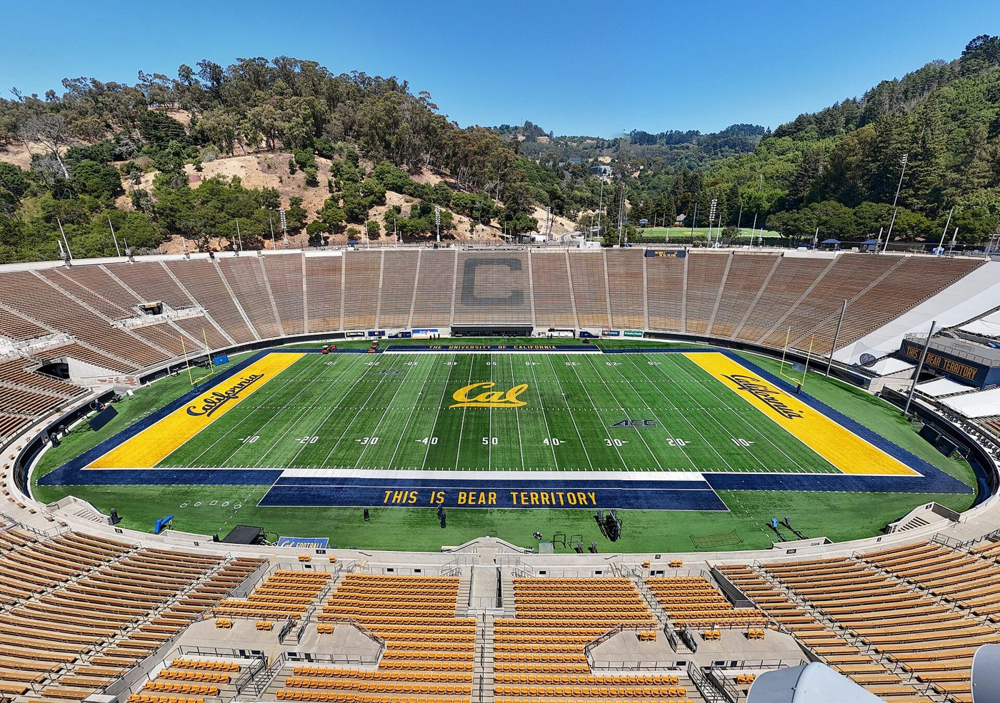
California Memorial Stadium in Berkeley, where Cal hosts Clemson tonight. Photo: Quintin Soloviev, CC BY 4.0, via Wikimedia Commons.
The play: Clemson -2.5 at -110, 3 units to win, 3.3 units at risk. Clemson at Cal kicks at 7:30 PM Pacific on ESPN from California Memorial Stadium in Berkeley.
Both teams are 2 and 1, but they didn't get there the same way. Clemson got embarrassed at LSU in week one and has looked like a different team in the two games since. Cal is 2 and 1 with one of those wins over Wagner, an FCS team, and a three point escape at Syracuse in a game it got outgained by 188 yards. I'll take the better roster laying less than a field goal.
Play
Price
To win
Risk
Break even
Kickoff PT
Clemson -2.5 at Cal
-110
3 units
3.3 units
52.38%
7:30 pm
At -110 the ticket needs to cash 52.38 percent of the time to break even. ESPN's matchup predictor gives Clemson a 60.4 percent chance to win the game outright. You don't need that to turn into a cover every time, but a team the model makes a clear favorite laying only 2.5 is the kind of number I want.
Clemson's offense has climbed every week
Clemson game
Result
Total yards
Rushing
Third downs
Yards allowed
at LSU
Lost 51 to 10
145
40 on 26
1 of 13
644
vs Georgia Southern
Won 22 to 7
347
150 on 39
2 of 14
266
vs North Carolina
Won 28 to 20
401
186 on 36
5 of 13
349
Total yards went 145, then 347, then 401. The LSU game was a disaster, no way around it: 1 of 13 on third down and 8 first downs. Since then Tait Reynolds has led the team in passing in both wins, 36 of 56 for 393 yards, and Gideon Davidson ran for 105 yards and a touchdown on 16 carries against North Carolina.
The defense has a pass rusher who is heating up. Will Heldt has 4 sacks across the last two games, 2 against Georgia Southern and 2 against North Carolina, and Georgia Southern finished with 22 rushing yards on 18 carries.
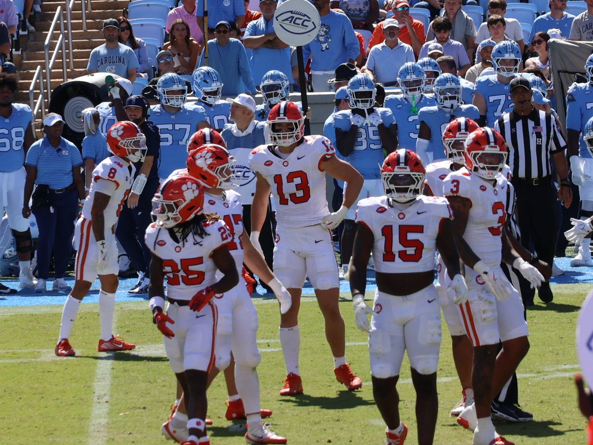
Will Heldt (13) at North Carolina in 2025. He has 4 sacks in Clemson's last two games. Photo: Hameltion, CC BY-SA 4.0, via Wikimedia Commons.
Cal against FBS teams
Cal game
Result
Total yards
Rushing
Turnovers
Yards allowed
vs UCLA
Lost 45 to 24
410
119 on 40
3
461
at Syracuse
Won 21 to 18
249
67 on 26
0
437
vs Wagner (FCS)
Won 49 to 7
626
134 on 28
2
198
Take out Wagner and Cal's run game has been a real problem: 119 yards on 40 carries against UCLA and 67 on 26 at Syracuse, under 3 yards a carry both times. Adam Mohammed is a good back, but he's had nowhere to go against FBS fronts. And the defense gave up 461 yards to UCLA and 437 to Syracuse.
Cal won at Syracuse because Syracuse turned it over three times and Cal turned it over zero. That's a result you can't count on repeating.
What could beat this ticket
Jaron-Keawe Sagapolutele. Cal's quarterback is 72 of 108 for 866 yards, 7 touchdowns and 2 interceptions. If Clemson can't get to him, Cal can throw its way into this game.
The LSU tape. LSU ran for 309 yards and put up 644 total on Clemson. North Carolina also ran for 214 last week. The run defense hasn't been a finished product.
Travel and the hour. Clemson flew across the country for a game that kicks at 10:30 PM Eastern. I'm not putting a number on that, but it's real.
That's the play: Clemson -2.5 at -110, 3 units to win. It's logged before kickoff on the public record at TrustMyRecord and graded there, win or lose. All stats come from ESPN box scores for the 2026 season through September 19; the line and the predictor are from ESPN's game page, read at 7:12 PM Pacific.
College Football Pick: Navy Moneyline at UAB, September 25, 2026
Posted: 3:55 PM PDT September 25, 2026
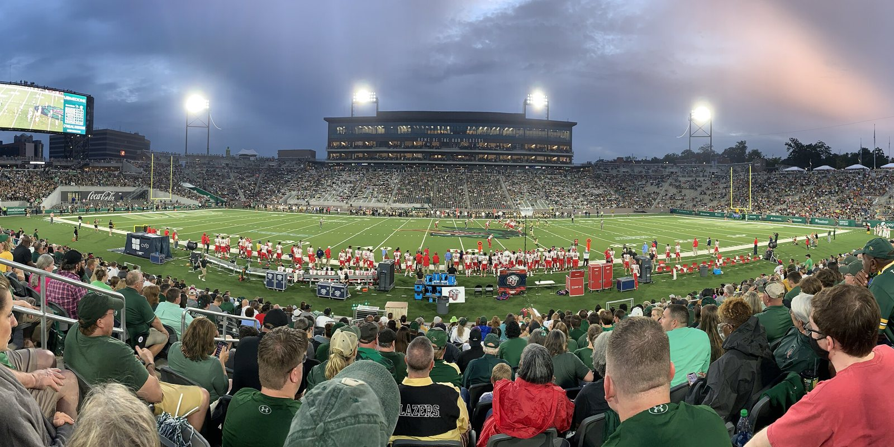
Protective Stadium in Birmingham, where UAB hosts Navy tonight, during a 2021 UAB game. Photo: AD3378, CC BY-SA 4.0, via Wikimedia Commons.
The play: Navy moneyline at -240, 3 units to win, 7.2 units at risk. Navy at UAB kicks at 4:00 PM Pacific on ESPN from Protective Stadium in Birmingham.
This is a play at a big price, so let me be clear about why. Navy has run for 6.8 yards a carry this season, UAB can't stop the run, and UAB's offense is getting worse by the week. The price has dropped a lot since this line opened, and I think the market overreacted to one bad Saturday in Boca Raton.
Play
Price
To win
Risk
Break even
Kickoff PT
Navy moneyline at UAB
-240
3 units
7.2 units
70.59%
4:00 pm
At -240 this ticket has to cash a little over 70.5 percent of the time to break even. ESPN's matchup predictor has Navy winning 73.4 percent of the time. That's a thin edge on the math alone, and the rest of this post is why I think the real number is higher.
Navy has run for 752 yards in two games
Navy game
Result
Rushing
Carries
Per carry
Rush yards allowed
vs Towson (FCS)
Won 42 to 15
506
73
6.9
39 on 20
at Florida Atlantic
Lost 38 to 30
246
37
6.6
-8 on 45
That's 6.8 yards a carry across 110 rushes. And the number didn't drop when the competition got better. Against Towson, an FCS team, Navy averaged 6.9 a carry. At Florida Atlantic it averaged 6.6. Braxton Woodson has 296 rushing yards on 35 carries and 4 touchdowns, and Jackson Gutierrez added 75 yards on 7 carries at FAU.
The loss at FAU wasn't about the run game. Caden Veltkamp completed 27 of 32 passes for 386 yards and 5 touchdowns, and Navy turned it over twice. That's the part that should worry you, and I'll get to it. But Navy's front held FAU to -8 rushing yards on 45 attempts, sacks included. Over two games, opponents have run 65 times against Navy for 31 total yards.
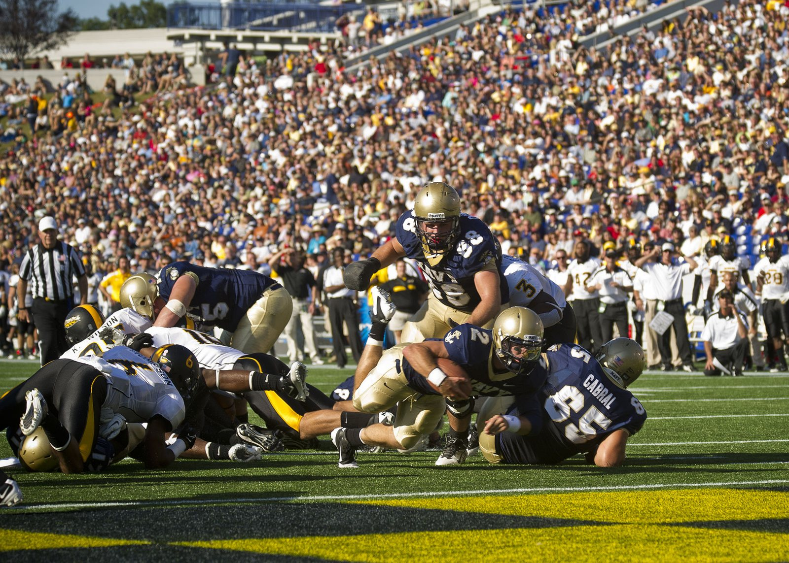
The option in one picture: Navy quarterback Kriss Proctor dives for the goal line in an October 8, 2011 game. U.S. Navy photo, public domain, via Wikimedia Commons.
UAB is sliding the wrong way
UAB game
Result
Total yards
Rushing
Third downs
Rush yards allowed
at Illinois
Lost 42 to 23
413
194 on 48
10 of 19
150 on 26
vs UL Monroe
Won 26 to 20
381
266 on 52
10 of 15
201 on 43
at Louisiana
Lost 21 to 14
218
74 on 31
2 of 12
225 on 53
Look at the total yards column: 413, then 381, then 218. At Louisiana last Saturday UAB ran for 74 yards on 31 carries, went 2 of 12 on third down and 0 for 4 on fourth down. Ryder Burton is 41 of 72 for 478 yards this year with 2 touchdowns and 3 interceptions. That's not a passing game built to win a shootout.
The defense is the bigger problem tonight. UAB has allowed 576 rushing yards on 122 carries, 4.7 a carry, to Illinois, UL Monroe and Louisiana, and none of those teams run the option. Navy is going to keep the ball on the ground all night, and UAB hasn't shown it can win that fight.
Rest and the schedule
Navy hasn't played since September 12, so it comes in off an open week with 13 days to get ready. UAB played at Louisiana on Saturday night and turns around on a Friday. Preparing for the option on a short week is about as tough an assignment as there is in college football.
The line moved five points, and I'm being honest about it
DraftKings opened Navy -11.5 and -500 on the moneyline, according to the odds feed on ESPN's game page. It's Navy -6.5 and -250 now, with UAB +205, and the total came down from 53.5 to 50.5. That's a big move against my side, and ESPN's feed doesn't give a reason for it. I'm not going to invent one.
Here's how I read it. The FAU loss put a lot of people off Navy, and FAU beat them through the air. UAB doesn't have that kind of passing game. What the move did is cut the price from -500 to -240, and at -500 I wouldn't be on this at all.
What could beat this ticket
Navy's pass defense. FAU threw for 386 yards at 12.1 an attempt. If Burton finds that same room, this gets uncomfortable fast.
Ball security. Navy lost a fumble and threw an interception at FAU. The option lives on long possessions, and giving any of them back makes a road favorite vulnerable.
The quarterback split. Woodson and Gutierrez both threw at FAU, and Woodson went 3 of 11 with an interception. A quarterback question on a road Friday night is a real risk.
That's the play: Navy moneyline -240, 3 units to win. It's logged before kickoff on the public record at TrustMyRecord and graded there, win or lose. All stats come from ESPN box scores for the 2026 season through September 19.
College Football Pick: Temple +3.5 vs Army, September 25, 2026
Posted: 12:45 PM PDT September 25, 2026
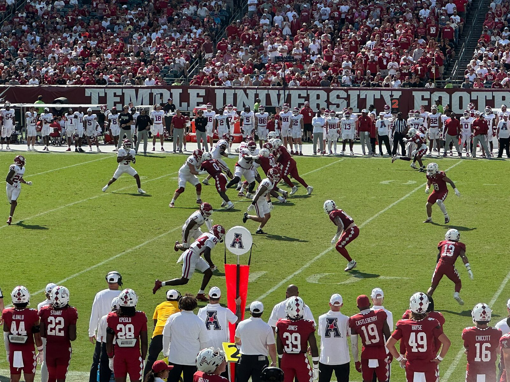
Temple on its home sideline at Lincoln Financial Field, September 13, 2025. Photo: Ian D'Andrea, CC BY-SA 4.0, via Wikimedia Commons.
The play: Temple +3.5 at -108, 1 unit to win. Army at Temple, 1:00 PM Pacific on ESPN.
Army is an option team. It ran the ball 108 times in its first two games and threw it 24 times. So the only question I care about in this game is whether Temple can stop the run, and so far the answer is yes. Rhode Island, Penn State and Toledo combined for 352 rushing yards on 89 carries against the Owls. That's 3.96 a carry.
Temple's problem has been the pass. Toledo threw for 429 on them last week in a 49 to 48 shootout. But Army doesn't throw it, and that's the matchup I'm betting on. Meanwhile the Owls have run for 227, 176 and 261 yards in their three games, including 5.3 a carry against Penn State.
Army's only game against an FBS team was a 28 to 24 home loss to South Florida on September 12, and the Black Knights got outgained 369 to 347 in it. Now they're laying more than a field goal on the road. The market has moved toward Army, from -3 at the open to -3.5, and I'm fine with that because the hook covers a three point loss.
Restored: May 15, 2026 | April 27-May 15 archive coverage
Recent BetLegend pick/archive links are restored below so the blog page exposes the current publishing run without duplicating Featured Game or sport-preview routing.
Yankees moneyline -143 for 3 units. New York opens at Sutter Health Park with Carlos Rodon facing ex-Yankee Luis Severino on the verified May 29 MLB probable board.
Phillies/Pirates First 5 Innings Under 4.5 at -210 for 3 units. Zack Wheeler vs Paul Skenes at PNC Park creates the May 17 BetLegend early-window under.
Rangers Team Total Under 4.5 at -140 for 3 units. Texas visits Houston at Daikin Park with Nathan Eovaldi against Peter Lambert on the verified MLB probable board.
NBA playoff reset and Game 6 preview for Cavaliers vs Pistons and Spurs vs Timberwolves, with schedule context, matchup analysis, injury-monitoring notes and betting...
MLB preview today with in-depth betting analysis for the full 11-game board, including Giants-Dodgers, Cubs-Braves, Phillies-Red Sox, Mariners-Astros and Padres-Brewers.
Anaheim Ducks team total under 3.5 goals (-170) NHL playoff pick vs Vegas Golden Knights for Game 6 on May 14, 2026. Full BetLegend handicap and betting analysis.
NHL playoff preview for Canadiens vs Sabres Game 5 and Golden Knights vs Ducks Game 6 with series context, matchup analysis, live-betting checkpoints and verified...
Canadiens vs Sabres Game 5 preview and Featured Game of the Day, with series tied 2-2, Buffalo home ice, matchup analysis, special-teams notes and live-betting...
Milwaukee Brewers moneyline -139 MLB pick vs San Diego Padres for May 14, 2026. Kyle Harrison, Griffin Canning, price discipline, and the full BetLegend handicap.
Angels team total under 3.5 runs (-153) MLB pick vs Guardians for May 13, 2026. Parker Messick, Progressive Field, Angels strikeout profile, lineup risk, and the full...
Vegas Golden Knights moneyline -150 NHL pick for Game 5 vs Anaheim Ducks on May 12, 2026. Verified series context, odds math, player trends, special teams notes, and...
Soccer Monday May 11 2026. Tottenham Hotspur vs Leeds United in the Premier League at 3 PM ET with Spurs fighting to stay above the relegation line. Rayo Vallecano vs...
NBA Playoffs Conference Semifinals Monday May 11 2026. Thunder at Lakers Game 4 10:30 PM ET on Amazon Prime Video at Crypto.com Arena, OKC -10.5 looking for the sweep...
NHL Stanley Cup Playoffs Second Round Monday May 11 2026. Colorado Avalanche at Minnesota Wild Game 4 8 PM ET on ESPN at Grand Casino Arena. Colorado -126 road...
Avalanche at Wild Game 4 May 11 2026 at Grand Casino Arena. COL -126 road favorite, total 6.5, MIN +106. Colorado leads the second round series 2-1 after Minnesota...
MLB Sunday preview for May 10, 2026 with game-by-game coverage of the 15-game board using verified schedule information only; no invented odds, starters, injuries, or...
NHL playoff preview for May 10, 2026. Buffalo at Montreal and Vegas at Anaheim with verified NHL schedule information only; no invented odds, starters, goalie...
NBA playoff preview for May 10, 2026. Knicks at 76ers Game 4 and Spurs at Timberwolves Game 4 with verified schedule information only; no invented odds, injuries, or...
Pistons at Cavaliers Game 3 May 9 2026 at Rocket Arena. CLE -4.5, total 211.5, ML -175. Detroit carries a 2-0 series lead into Cleveland with Kevin Huerter doubtful....
NHL playoff preview for May 9, 2026. Carolina at Philadelphia and Colorado at Minnesota with verified NHL schedule information only; no invented odds, starters,...
Wednesday's soccer slate features Champions League quarterfinal second legs, including Arsenal vs Sporting CP and Bayern Munich vs Real Madrid at the Allianz Arena.
MLB Friday May 8 2026 fifteen-game slate. Featured: Braves at Dodgers 10:10 PM ET at Dodger Stadium with Chris Sale facing Emmet Sheehan, ATL +105 LA -115 total 8....
NHL Stanley Cup Playoffs Second Round Friday May 8 2026. Canadiens at Sabres Game 2 7 PM ET on TNT/truTV/Max at KeyBank Center, Buffalo -130 with the total at 5.5,...
Knicks at 76ers Game 3 May 8 2026 at Wells Fargo Center. PHI -1, total 213.5, ML -112. New York carries a 2-0 lead into Philadelphia with OG Anunoby hamstring...
NBA Conference Semifinals Game 3 Friday May 8 2026. New York Knicks at Philadelphia 76ers 7 PM ET on Prime Video at Wells Fargo Center, PHI -1 with the moneyline at...
Soccer Friday May 8 2026. Bundesliga Round 33 Borussia Dortmund vs Eintracht Frankfurt 2:30 PM ET at Signal Iduna Park, Dortmund -200 over 1.5 at 1.11. La Liga...
NBA Conference Semifinals Game 2 Thursday May 7 2026. Cavaliers at Pistons 7 PM ET on Prime Video at Little Caesars Arena, Detroit -3.5 with the moneyline at -162....
NHL Stanley Cup Playoffs Round 2 continues Thursday May 7 2026. Hurricanes at Flyers Game 3 at Wells Fargo Center 8:00 PM ET on TNT. Carolina leads the series 2-0...
MLB Thursday May 7 2026 marquee slate. Rangers at Yankees 12:35 PM ET with Gore vs Blackburn, NYY -194. Reds at Cubs 2:20 PM ET with Lowder vs Imanaga at Wrigley....
NHL Stanley Cup Playoffs second round Wednesday May 6 2026. Canadiens at Sabres Game 1 7 PM ET on TNT at KeyBank Center, Buffalo -130 with the total at 5.5. Ducks at...
NBA Conference Semifinals continue Wednesday May 6 2026 with two Game 2s. 76ers at Knicks 7 PM ET on ESPN at Madison Square Garden, New York -6.5 with the total at...
MLB Wednesday May 6 2026 eleven-game slate. Dodgers at Astros 2:10 PM ET with Tyler Glasnow facing Lance McCullers, Los Angeles -220 with the total at 8.5. Brewers at...
Athletics ML +156 vs Phillies free pick at Citizens Bank Park May 6 2026. Jeffrey Springs 3.96 ERA, Zack Wheeler 2.45 ERA, the dog price holds value as Oakland sits...
MLB Tuesday slate May 5 2026 features 10-game schedule headlined by Jacob deGrom and the Texas Rangers at Yankee Stadium, Sandy Alcantara hosting Baltimore at...
Twelve MLB games Monday May 4 2026. Yoshinobu Yamamoto on the bump for the Dodgers in Houston opposite Colton Gordon at Daikin Park, LAD -160 with the total at 9....
Fifteen MLB games Sunday May 3 2026. Justin Wrobleski for the Dodgers in St. Louis opposite Dustin May for the Cardinals. Trey Yesavage for the Blue Jays at Target...
Fifteen MLB games Saturday May 2 2026. Roki Sasaki anchors Dodgers-Cardinals at Busch. Andrew Painter starts for the Phillies in Miami. Chris Sale opens at Coors...
NBA Playoffs First Round Friday May 1 2026 three Game 6s. Pistons at Magic with Orlando up 3-2 and Franz Wagner OUT. Cavaliers at Raptors with Cleveland up 3-2....
NHL Stanley Cup Playoffs First Round Friday May 1 2026 three-game closeout slate. Lightning at Canadiens with Montreal up 3-2 at Bell Centre. Sabres at Bruins with...
Sabres/Bruins Over 5.5 free pick Game 6 at TD Garden. Buffalo leads the series 3-2 and a desperate elimination Bruins script projects over the total. 3-unit BetLegend...
MLB Friday May 1 2026 slate. Diamondbacks-Cubs at Wrigley with Gallen vs Rea. Dodgers visit the Cardinals at Busch Stadium with Sheehan vs Liberatore. Yankees host...
NHL Stanley Cup Playoffs First Round Thursday April 30 2026 single-game slate. Stars at Wild Game 6 7:30pm ET on Grand Casino Arena Saint Paul with Minnesota up 3-2...
MLB Thursday April 30 2026 nine-game slate. Paul Skenes hosts the Cardinals at PNC Park. Framber Valdez visits Atlanta for the Tigers. Kevin Gausman headlines the...
Celtics vs 76ers NBA Playoffs First Round Game 6 Analysis Stats Preview April 30 2026. Boston Celtics at Philadelphia 76ers at Wells Fargo Center. Boston leads series...
MLB Wednesday April 29 2026 fifteen-game slate. Skubal-Ritchie in Atlanta. Glasnow-Alcantara at Dodger Stadium. Webb anchors the Phillies-Giants. Yankees in Texas...
NBA Playoffs First Round Wednesday April 29 2026 three-game elimination night. Raptors at Cavaliers Game 5 with the series tied 2-2. Magic at Pistons Game 5 with...
MLB Tuesday April 28 2026 fifteen-game slate. Shohei Ohtani takes the mound for the Dodgers vs Marlins at Dodger Stadium. Jacob deGrom starts for the Rangers vs...
NBA Playoffs First Round Tuesday April 28 2026 three-game Game 5 slate. Knicks-Hawks tied 2-2 with NYK -6.5 at MSG. Celtics chase the closeout with -11.5 over the...
NHL Stanley Cup Playoffs First Round Tuesday April 28 2026 three Game 5s. Bruins face elimination at KeyBank Center vs Sabres trailing 1-3, BUF -170, total 5.5. Wild...
Wolves at Nuggets Monday April 27 2026 Game 5 at Ball Arena. MIN leads 3-1 with Edwards out and DiVincenzo lost for season. DEN -11.5, total 221.5, TNT 10:30 ET....
NBA Playoffs First Round Monday April 27 2026 three-game slate. Pistons visit Orlando trailing the series 1-2 in a must-win Game 4. Thunder go for the sweep at...
Soccer Monday April 27 2026 marquee fixture - Manchester United host Brentford at Old Trafford in a Premier League Champions League race anchor. Carrick
MLB Monday April 27 2026 eight-game slate. Max Fried vs Jack Leiter as Yankees visit Texas. Yoshinobu Yamamoto faces the Marlins at Dodger Stadium. Suarez and Cease...
Philadelphia Flyers puck line +1.5 (-210) free pick vs Pittsburgh Penguins Game 5 of the East First Round at PPG Paints Arena. Flyers lead the series 3-1 and have a...
NHL Playoffs First Round Monday April 27 2026 two-game slate. Flyers visit Pittsburgh leading the series 3-1 chasing the closeout at PPG Paints Arena. Vegas Golden...
Chicago Cubs moneyline +107 free pick vs San Diego Padres at Petco Park, Monday April 27 2026. Plus-money road dog at the most pitcher-friendly park in the National...
Vegas Golden Knights Moneyline -150 vs Ducks Game 5 NHL Pick
Posted: 8:30 AM PT, May 12, 2026 | NHL Stanley Cup Playoffs
The BetLegend Game 5 card is live: Vegas Golden Knights moneyline -150 against the Anaheim Ducks at T-Mobile Arena. The series is tied 2-2, Vegas gets the matchup control back at home, and the Marner-Eichel engine is still driving enough offense to justify laying the moneyline instead of chasing a puck-line derivative.
The Milwaukee Brewers are going for the sweep on Sunday afternoon at American Family Field, and everything about this matchup screams home team. Chicago sent a message early in this series that they aren't ready to compete yet, and Milwaukee has been all too happy to remind them what an NL Central contender looks like. The Brewers have outscored the White Sox 20-3 through the first two games of this series, winning 14-2 on Opening Day and 6-1 on Friday night. That kind of dominance isn't random, and it isn't stopping today.
The Pitching Matchup Tilts Hard Toward Milwaukee
Brandon Sproat takes the ball for the Brewers, and this is a guy who finished his 2025 minor league season on an absolute tear. After June 28 last year at Triple-A Syracuse, Sproat posted a 2.59 ERA with a 2.81 FIP and a 29.9% strikeout rate across 59 innings. His fastball sits 95-97 and touches 100, and he works with a six-pitch mix that keeps hitters guessing. His 2026 spring training numbers were encouraging too, a 3.46 ERA with a 21.2% K-BB% in 13 innings. He's got the arm talent to eat innings against this offense.
On the other side, the White Sox are rolling out Anthony Kay, a left-hander who spent last year in Nippon Professional Baseball with the Yokohama BayStars. His NPB numbers were solid, a 1.74 ERA and 0.98 WHIP, but those numbers came against Japanese lineups in smaller ballparks with different competition levels. Before heading overseas, Kay's MLB career ERA sat at 5.59 across 85.1 innings. His spring training numbers this year weren't inspiring either, at 4.95 ERA, and he earned the number three rotation spot more by default than dominance. The White Sox pitching depth is razor thin with three arms recovering from Tommy John surgery on the 15-day IL.
Milwaukee's Bullpen Advantage Is Massive
Even if the starters both pitch decently, the bullpen comparison is where this game cracks wide open. Milwaukee's relief corps is stacked. Trevor Megill closed 30 games last year with a 2.49 ERA and earned an All-Star nod. Behind him, the Brewers have Abner Uribe, Angel Zerpa, and Jared Koenig, all capable of closing if called upon. That's four legitimate high-leverage arms, and it means Craig Counsell can mix and match without worrying about overextending anyone this early in the season.
Chicago's bullpen, by contrast, is a work in progress. Jordan Hicks and Seranthony Dominguez bring experience, but the depth behind them is concerning. Three pitchers are currently on the 15-day IL recovering from Tommy John surgery, which means the White Sox are operating with a shorter bench than they'd like. If Kay gets into trouble early, the arms available behind him aren't the kind that inspire confidence against a lineup that just put up 20 combined runs in two games.
The Lineup and Situational Edge
Milwaukee's offense has been humming. Christian Yelich racked up three hits and an RBI in Friday's win. Garrett Mitchell contributed two singles, two RBI, and two stolen bases. Jake Bauers launched a three-run homer on Opening Day, and William Contreras smacked a three-run double in that same game. Sal Frelick added a two-run shot of his own. This lineup is deep and confident, and they're seeing the ball well against a pitching staff that can't stop anyone right now.
The White Sox have gotten production from Munetaka Murakami, who has homered in both games since making his MLB debut. That's a bright spot for Chicago's rebuild, but one bat can't carry an entire offense. Outside of Murakami, the Sox have scored just one run in two games. Chase Meidroth homered on Opening Day, but since then the lineup has been silent. This is a team that went 41-121 last season, and while they've added young talent, the growing pains are showing up exactly where you'd expect them.
The Brewers also have the retractable roof at American Family Field working in their favor. Controlled conditions, a familiar environment, and a crowd that's been electric through the first two games of the season. Milwaukee is chasing their fourth consecutive NL Central title, and they're playing with the kind of urgency that a rebuilding White Sox club simply can't match right now.
The Bottom Line
This is about as clean a spot as you'll find in early-season baseball. The Brewers have the better starter, the deeper bullpen, the hotter lineup, and the home field advantage. They've outscored Chicago by 17 runs through two games and there's no reason to expect a dramatic reversal on Sunday afternoon. The White Sox are young, rebuilding, and running into a buzzsaw of a team that looks like they picked up right where they left off last October. Milwaukee is the right side here, and we're laying the juice with confidence.
Free Pick of the Day
Brewers Moneyline -157 (3 Units)
MLB Pick of the Day: New York Mets vs Tampa Bay Rays June 13, 2025 MLB Betting Pick
Posted: 9:37 PM June 12, 2025
The New York Mets welcome the Tampa Bay Rays to Citi Field on Saturday, and on paper, this matchup tilts strongly in the Mets’ favor. The Rays are handing the ball to Taj Bradley, while New York counters with right-hander Clay Holmes, who’s quietly turned in one of the more reliable campaigns for any NL starter so far.
Let’s start with Holmes. The Mets righty enters Saturday with a 7–3 record and a 2.95 ERA across 13 starts. He’s held opposing hitters to a .246 average, with 65 strikeouts in 73 innings. He’s not flashy, but he attacks the zone, doesn’t walk many, and limits hard contact. Holmes hasn’t given up more than three earned runs in any start since mid-May. Last time out, he worked 5.2 shutout innings against Washington with six strikeouts and no walks, and needed just 81 pitches to get there.
Bradley’s raw stuff is electric, but the results haven’t followed. He comes in with a 4.58 ERA and 1.25 WHIP, and he’s been noticeably worse on the road, posting a 5.76 ERA away from Tropicana Field this season. Left-handed bats have hurt him all year, and he’s allowed 10 home runs through 13 starts. In two recent road games, he gave up a combined 9 earned runs in 9.1 innings against Baltimore and Minnesota.
The Mets have found a groove lately, winning 8 of their last 11 games and outscoring opponents 62–43 during that run. Francisco Lindor is heating up at the plate, while Nimmo and Alonso are getting on base at a .400+ clip this past week. Rookie Mark Vientos continues to provide a spark, hitting .364 in June.
On the flip side, Tampa Bay has lost 10 of their last 12 on the road. Over that span, they rank bottom five in OPS and runs scored. Their bullpen hasn’t helped either, coughing up a 5.01 ERA and 1.49 WHIP over the last two weeks. It’s been a grind just to stay in games late.
This is a spot where everything lines up, the better pitcher, the hotter lineup, the better pen, and the home field. The price may not be cheap, but Holmes has earned it. If the Mets can grab an early lead off Bradley, they should be able to ride Holmes and a solid pen to the finish line.
We’re taking the New York Mets moneyline on Saturday behind Clay Holmes. The edge is clear, and we’re backing the home side to get it done against a Rays team that continues to stumble on the road.
MLB Pick of the Day: Angels Moneyline vs A’s June 11, 2025
Posted: 11:10 PM June 10, 2025
The Los Angeles Angels are once again facing the Oakland Athletics on Tuesday, June 11, and we’re going right back to the well. Despite winning six straight games against this Oakland team and walking off an emotional comeback win Monday night, the Angels are listed at only –130 on the moneyline. That number is wildly short, and creates a sharp betting opportunity that we’re not going to pass up.
Let's begin with the pitching matchup. The Angels will be starting veteran right-hander Kyle Hendricks, who was recently acquired to stabilize the rotation. While he’s no longer in his peak Cubs form, Hendricks is exactly the type of pitcher who gives bad offenses like Oakland serious trouble. He’s a ground ball machine who works quickly, throws strikes, and doesn’t beat himself. He relies on a sinker-changeup combo that suppresses power, and that’s a big factor here, the A’s rank 29th in Major League Baseball in OPS and wRC+ against right-handed pitchers with below-average velocity. They struggle mightily with soft-tossers and off-speed-heavy arms like Hendricks.
On the other side, the Athletics are sending JP Sears to the mound, and that’s where this handicap becomes crystal clear. The Angels have absolutely owned Sears throughout his career. In seven starts against Los Angeles, he owns a 4.84 ERA, but the number should arguably be worse. Just three weeks ago, on May 21, 2025, the Angels exploded for six earned runs and four home runs off Sears in just five innings. That game was not an anomaly, it was a continuation of a larger pattern. Key Angels hitters like Jo Adell, Logan O’Hoppe, and Zach Neto all have multiple home runs off Sears. This is a lineup that sees him well and attacks his mistakes with power.
From a team-wide trend perspective, the Angels are now 6–0 against the A’s in 2025. They’ve won in every fashion, blowouts, comebacks, and late-inning heroics. They’ve outscored Oakland 39–17 in those games and have covered the runline in four of the six. The A’s, meanwhile, are dealing with bullpen fatigue, after burning multiple arms in Monday’s extra-inning loss. Their relief corps ranks in the bottom five in WHIP, ERA, and opponent slugging since mid-May. If Sears gets pulled early again, the Angels will be facing a vulnerable set of relievers who have already been overexposed.
Beyond the numbers, there’s a clear momentum and confidence edge. The Angels have been finding ways to win close games and are playing with real energy. The clubhouse clearly hasn’t quit on the season, and walk-off wins like Monday night’s galvanize a team emotionally. For a club that has quietly won seven of their last 11, it’s time the market starts pricing them like a competitive unit, not the early-season mess they were.
So why is this line only –130? It’s because sportsbooks, and the public, are still pricing the Angels based on their reputation, not their actual performance. They see a sub-.500 record and dismiss them as inconsistent, but that’s ignoring the real data. In 2025, the Angels have shown they can crush below-average lefties, hit for power against pitchers like Sears, and finish games strong. This isn’t guesswork, this is all backed by actual outcomes.
We’re getting a team that has dominated the head-to-head series, has the starting pitching edge, a more reliable bullpen, favorable platoon matchups, and momentum, at a cheap price. Whether you’re betting straight, adding to a parlay, or looking for value props like Jo Adell HR or Angels Team Total Over 4.5, this is the spot.
The pick: Angels Moneyline –130
MLB Pick: Giants ML Pick June 10, 2025
Posted: 12:44 AM June 10, 2025
For our official June 10 MLB pick, we're going with the San Francisco Giants moneyline vs. the Colorado Rockies. We don’t normally fire on games with this much juice, but after a full matchup evaluation, the model flagged this one as a sharp play. The sportsbook is implying about a 69% win probability at –225, but our internal breakdown puts the Giants’ true win rate closer to 72–76%. In a game where every major edge, pitching, bullpen, offense, defense, trends, points in one direction, we’re willing to pay the price.
Pitching Matchup: Kyle Harrison gets the start for San Francisco. Through 18.2 innings in 2025, he's posted a 4.34 ERA and 1.29 WHIP with 19 strikeouts and just 7 walks (9.1 K/9, 2.3 BB/9). He's not dominant, but he commands the zone and limits damage. Opposing him is Colorado lefty Carson Palmquist, who enters with an ugly 8.50 ERA and 1.83 WHIP over the same number of innings. Palmquist is walking nearly 6 batters per 9 and allowing plenty of hard contact. If there's a matchup where the Giants can jump out early, it's this one.
Giants vs Rockies Key Team Trends: The Rockies are 6–25 at Coors Field this season. That’s not a typo. This team is historically bad at home and enters this one with back-to-back losses and just 2 wins in their last 10. San Francisco, on the other hand, is trending upward. They've won five straight and continue to play fundamentally sound baseball. Even on the road, where they sit 16–17, they’ve been far more consistent than Colorado has been in any context. Momentum favors the Giants here, clearly.
Bullpen Edge: San Francisco’s bullpen ranks inside the top 10 league-wide with a team ERA around 3.04 and WHIP of 1.19. They limit free passes, strand runners, and close out games effectively. Colorado’s bullpen, by contrast, is near the bottom in every category. Their collective ERA sits north of 5.50, and they’ve repeatedly let games get away late. The Rockies also have a bottom-five defensive efficiency rating, meaning even when contact is made, outs aren't guaranteed. Over nine innings, that’s a massive gap in late-game stability.
Giants Offensive Profile: The Giants are far from an elite offense, but they’re doing enough. Their team slash line sits at .229/.305/.367, but the production is coming in key spots. Heliot Ramos is red-hot, hitting .294 with a .360 OBP and .484 slugging. Matt Chapman has blasted 12 home runs despite a .243 average, and Wilmer Flores has driven in 49 RBIs while slugging over .400. They hit lefties well and show better plate discipline than the Rockies, which is important against a wild pitcher like Palmquist.
Rockies Offensive Struggles: Colorado is hitting just .219 as a team, with a .282 OBP and .362 slugging. They've only hit 55 home runs and rank bottom-three in most offensive categories. Hunter Goodman has been their lone bright spot (.280 AVG, 10 HR, 37 RBI), but beyond that, it’s a weak lineup that doesn’t scare opposing starters or relievers. They're also striking out more than league average and have failed to capitalize even in hitter-friendly Coors.
Model Projection vs. Market: ESPN’s Matchup Predictor gives the Giants a 62.5% chance to win. Stats Insider and independent models peg it at around 62–63%. Our adjusted projection, factoring in starting pitching, bullpen performance, and offensive matchup trends, puts the win probability closer to 68%. That’s right in line with the implied odds of –225, which represents a 69% chance. It’s not a massive misprice, but with the direction both teams are heading, we believe the Giants are worth it here. Sometimes the best edge is knowing when to lay it.
From every angle, stats, momentum, eye test, this is a game the Giants should win far more often than they lose. The model doesn’t light up many high-juice favorites, but when it does, we trust it. We’re aware of the risk, but we also know games like this are often lopsided by the third inning. We’re backing the better arm, the better bullpen, the hotter bats, and the team that’s simply playing winning baseball.
Final pick: San Francisco Giants ML (–225)
MLB Pick of the Day: MLB Betting Pick Angels vs Athletics Prediction June 10, 2025
Posted: 10:29 PM June 9, 2025
If you’re looking for one of the sharpest MLB betting picks for June 10, 2025, the Los Angeles Angels moneyline stands out. This is a favorable home matchup for the Angels against the Oakland Athletics, and our model sees value in backing José Soriano in this spot.
Soriano enters Tuesday night’s game in strong form. Over his last four starts, he’s allowed just five earned runs total and posted a strikeout-to-walk ratio of 21:5. His mix of velocity and movement has made him particularly effective at home, and this matchup vs. the A’s gives him a great runway to keep rolling. Oakland ranks in the bottom five of MLB in OPS, wOBA, and batting average vs. right-handed pitching in 2025.
Oakland will counter with Mitch Spencer, a rookie making just his second career MLB start. While he’s shown some promise in the minors, his debut was rocky, allowing two runs and multiple walks over just four innings. Now he’s tasked with facing a rising Angels lineup on the road, a tough ask, especially with the way hitters like Taylor Ward and Logan O’Hoppe have been squaring up the ball against righties lately.
From a betting perspective, this is also a bullpen mismatch. The Angels' bullpen has stabilized, with a 3.12 ERA over their last 15 games, while the Athletics continue to rank near the bottom of the league in late-inning effectiveness. This gives Los Angeles an edge not just early, but throughout the game, a key factor when backing a full game moneyline.
The current betting line has the Angels listed at –155. While that may seem steep, the pitching edge, bullpen advantage, and poor offensive metrics from the A’s make this a playable number for June 10 MLB bettors. If you’re searching for a top MLB prediction backed by form and matchup data, this is a strong position to consider.
Final pick: Angels ML June 10th, 2025
Reds vs. Guardians Under 8.5 (+100) (June 9, 2025)
Posted: 5:56 PM, June 8, 2025
Monday’s matchup between the Reds and Guardians offers sneaky value on the total. With the line sitting at 8.5 and even money on the under, this projects as a lower scoring affair, especially when you dig into the starters and the current state of both offenses.
The Reds send veteran lefty Wade Miley to the mound. He’s been sidelined for most of the season but returns to the rotation following Hunter Greene’s injury. While Miley’s ERA sits at an inflated 18.00 from two early season starts, it’s worth noting that he was recovering from a shoulder issue and pitched much better in recent minor league rehab outings. Across 2023, Miley posted a 3.14 ERA over 120 innings, so he’s capable of limiting damage when healthy.
The Guardians will counter with right hander Luis Ortiz, who’s been solid if unspectacular this season. Through 11 starts, Ortiz has compiled a 4.02 ERA with a 1.36 WHIP and has been efficient lately, giving up two earned runs or fewer in four of his last five starts. In his last outing, he threw six scoreless innings against the White Sox, keeping the ball on the ground and limiting hard contact.
Offensively, neither team has shown much life at the plate recently. Over the last 14 days, the Reds are hitting just .219 with a .645 OPS, ranking them 25th in MLB. They’ve struggled mightily against right handed pitching and have failed to score more than four runs in six of their last eight games. The Guardians haven’t been much better, with a team OPS of .658 during that same stretch. They’re averaging 3.6 runs per game across their last 10 contests and are showing signs of fatigue heading into this interleague matchup.
Bullpen trends point to added confidence in the under. Cleveland’s relievers have been one of the most consistent groups in baseball with a 3.18 ERA on the year, while Cincinnati’s pen has stabilized lately with a 3.59 ERA over the past 30 days. Both managers have leaned more on their bullpens early in games, especially when starters hit pitch count limits.
Weather should also be on our side. The forecast in Cleveland calls for temperatures in the mid 60s with light wind blowing in from right field. Historically, Progressive Field plays larger under these conditions, reducing home run potential and favoring pitchers who keep the ball on the ground, like Miley and Ortiz.
All signs suggest a slower paced game with limited offensive outbursts. Between two soft hitting lineups, steady bullpen arms, and favorable pitching conditions, this total feels a run too high.
Final pick: Reds vs Guardians under 8.5 at +100
Phillies vs Pirates Under 7 (June 8, 2025)
Posted: 7:04 PM, June 7, 2025
Sunday’s game between the Philadelphia Phillies and Pittsburgh Pirates sets up as one of the best under spots on the board, with the total opening at 7 and two high end arms toeing the rubber. Paul Skenes continues to emerge as a frontline ace, while Cristopher Sánchez quietly ranks among the most efficient contact managers in the National League.
Skenes enters the start with a 2.43 ERA and 60 strikeouts across 44.1 innings. His 12.2 K/9 ranks top 10 among all starters with at least 40 innings pitched. Even more impressively, opponents are hitting just .188 off him the first time through the order, and he’s allowed just two home runs all season. His fastball averages 98.8 mph and pairs with a vicious slider that generates a 41% whiff rate. In five road starts, he’s posted a 1.89 ERA and a 0.91 WHIP . elite numbers that travel.
Cristopher Sánchez may not have the name recognition, but he’s been just as reliable. He holds a 2.75 ERA over 11 starts, with a 1.14 WHIP and only 3 home runs allowed in 59 innings. Sánchez is especially tough at Citizens Bank Park, where his home ERA is 1.62 this season. He owns a 58% ground ball rate and gives up hard contact just 27.4% of the time . top 15 among qualifying pitchers. Against right handed hitters, he’s limited opponents to a .213 batting average and just a .604 OPS.
Offensively, both teams are in less than ideal spots. The Pirates rank 28th in OPS vs left handed pitching and have scored 2 runs or fewer in 7 of their last 10 games. Their strikeout rate jumps to 25.8% against southpaws, and they struggle to string hits together. Meanwhile, the Phillies have been oddly slow starting at home, averaging just 2.1 runs in the first five innings across their last 10 games. They're also unfamiliar with Skenes, which gives him a major edge the first time through the lineup.
Weather is another bonus for the under. Sunday’s forecast in Philadelphia calls for overcast skies, temperatures in the low 60s, and slight wind blowing in. Humidity will be low, limiting ball carry. This is about as pitcher friendly as Citizens Bank Park gets in June.
Both bullpens are decent but shaky at times, which is why this game may see sharper action on both the **first five under** and the full game under 7. But with two starters who limit power, throw strikes, and generate weak contact, there’s a strong case to be made that we see a 2-1 or 3-2 type game here . one that never threatens to break the number.
Official Pick: Phillies vs Pirates Under 7 (Full Game)
Astros vs Guardians Under 7.5 (Sharp Total Play for June 7th, 2025)
Posted: 6:19 PM – June 7, 2025
This one has the feel of a classic under. Two red hot starters take the mound. Hunter Brown has been lights out for Houston, with a 1.83 ERA and a fastball that’s generating serious whiffs. Over his last four outings, he’s allowed just three total earned runs while striking out 26 across 24.1 innings.
Gavin Williams doesn’t have the same name recognition, but the Guardians' righty is quietly shoving. He’s held opponents scoreless in three of his last five starts, including 6.2 shutout innings against the Angels in his most recent appearance. His fastball/curveball combo has been sharp, and Houston hasn’t hit many righties like him lately.
Offensively, neither side is clicking. Cleveland ranks near the bottom of the league in OPS and slugging, and they’ve scored three runs or fewer in seven of their last ten. Houston’s bats are better on paper, but they've struggled to string together runs against quality pitching. They’ve gone under their team total in five of their last six games.
Both bullpens have quietly stabilized, especially Houston’s. After a brutal start to the season, the Astros’ relief staff has been nails in the last two weeks, allowing just 5 earned runs over their last 26 innings. Cleveland’s pen has been top 5 in ERA all season and doesn’t give up much late.
The umpire behind the plate is Jordan Baker, known for a wider zone and a slight under lean. Games he's called behind the plate have gone 8-14-1 to the under this season. That adds another layer of value in what already sets up as a pitching heavy battle.
The total opened at 7.5 and hasn’t budged, which we love. It tells us books aren’t interested in inviting over money despite the market’s tendency to chase offense. We’re locking in Under 7.5 (-110) for 1 unit and trusting the arms to control the pace from the first pitch to the final out.
What to Do When There’s No Value on the Board
Posted: 7:46 PM – June 5, 2025
Some days, the board’s dead. No angles. No edge. The model doesn’t like anything, and forcing action just means giving the books a free shot. Today’s one of those days.
We don’t bet just to bet. We track every play, and if it doesn’t show value, it doesn’t get posted. We’re not here to chase, guess, or fill space with fake picks.
When the model says nothing, we trust it. That’s what discipline looks like.
No bets? It’s not wasted time. Off days are when real bettors work on things like:
Checking recent CLV performance
Reviewing matchup notes and weather triggers
Updating filters or adjusting pitcher metrics
Scanning for public overreaction spots
Recent notes from our logs:
Unders are quietly trending in night games, especially with low humidity and non-hitter parks
Home dogs with sharp line movement have hit at a higher rate this month
TV games are inflating totals, market seems to shade toward overs when eyes are on it
Anyone can fire picks every day. Most of them lose. The real edge comes from knowing when to strike, and when to stay on the sidelines.
Today, we wait. Tomorrow, maybe we bet.
Dodgers vs. Mets Under 9.5 (-109)
Posted: June 4, 2025 – 5:33 PM
Pitching Matchup:
David Peterson (LHP, Mets): Peterson enters this matchup with a 2.69 ERA across 63.2 IP and a WHIP of 1.26. He’s allowed 3 earned runs or fewer in 10 of his 11 starts this season, and over his last 7 outings he’s sporting a 2.38 ERA. The Mets rotation overall has done a great job keeping the ball in the yard, and Peterson is a big part of that.
Landon Knack (RHP, Dodgers): Knack has been solid in his first few MLB starts, with a 4.58 ERA and 1.36 WHIP. In his last outing he held the Yankees to just 1 run over 6 innings, striking out 6 without a walk. Though the sample is small, he’s held his own, and allowed just 2 ER in his prior start against the Mets as well.
Weather & Park Factors:
Dodger Stadium remains one of the most pitcher friendly parks in baseball, especially during cool and cloudy evenings like today (low 60s, slight marine layer). There’s no wind threat to boost offense, and conditions are ideal for a lower scoring game.
Offensive Trends:
Mets: This offense is struggling mightily. They’ve scored 2 runs or fewer in 5 of their last 8 games, and have a bottom 10 OPS against right handed pitching. They’ve averaged just 3.3 runs over the past 10 games overall.
Dodgers: Despite the star studded lineup, the Dodgers are trending to the under. 8 of their last 11 games have stayed under the total. They’ve also cooled off at home, averaging just 3.8 runs in their last 7 at Dodger Stadium.
Key Trends:
Under is 5–1 in the last 6 meetings between these two teams
Mets are 8–2 to the under in their last 10 road games
Dodgers are 6–2 to the under in their last 8 home games
Summary: Two starters in solid form, a pitcher friendly park, and two offenses showing signs of fatigue and inconsistency. With favorable weather and historical trends backing it up, this total feels a half run too high.
Astros vs Pirates Under 7.5 (+100) June 5, 2025
Posted: 8:11 PM – June 4, 2025
One of the sharper spots on the board today is the under 7.5 (+100) in the Astros vs. Pirates matchup. Both teams are coming off back to back shutouts, each winning one, and the pitching matchup favors another low scoring affair.
Framber Valdez has been quietly dominant for Houston this year with a 3.12 ERA, 1.06 WHIP, and strong ground ball rates. He’s been especially sharp over his last two outings, allowing just one earned run total across 14+ innings.
Mitch Keller enters with a 3.73 ERA and a 1.26 WHIP, and despite a 1-7 record, he’s been relatively effective in limiting damage. He doesn’t have much help behind him, but he’s pitched better than the box scores suggest, especially early in games.
Offensively, both clubs are sputtering. Pittsburgh is averaging just 3.2 runs per game over their last five, while Houston’s bats were silenced in a 3-0 loss last night. Both teams rank bottom half in runs per game on the season, and both bullpens come in rested after yesterday’s low scoring grind.
Given the quality of starting pitching, park factors in Pittsburgh, and the lack of recent offensive output, this total is priced a touch high at 7.5. At even money, there’s enough value to pull the trigger.
The Pick: Under 7.5 (+100)
Edge: +4.1%
Units: 2 Units
Giants ML -114 – (June 5, 2025)
Posted: 7:23 PM – June 4, 2025
The BetLegend model is backing the San Francisco Giants -114 on June 5, 2025, and it’s not just based on feel. It’s backed by elite pitching, home field edge, and matchup specific trends.
Robbie Ray has been a rock for the Giants this year, posting a 7-1 record, 2.43 ERA, and 1.11 WHIP through 70.1 innings. Even sharper: over his last seven starts, he’s allowed just 1.57 earned runs per game with a WHIP under 0.90. He draws a Padres lineup that’s already struggled to score against quality lefties this season.
On the other side, Dylan Cease owns a 1-4 record with a 4.66 ERA and a bloated 5.68 ERA on the road. He’s been vulnerable to early damage, and that’s a problem against a Giants team that plays well early at Oracle.
San Francisco is 18-11 at home this season and ranks top 5 in team ERA (3.03) and WHIP (1.197). They’re not just surviving, they’re suppressing runs with consistency, especially at home where Oracle Park limits power output from opposing lineups.
While San Diego has won five of six matchups so far this season, including two of the first three games of this series, but the edge is in starting pitching. Line value at -114 gives us enough margin to fire.
The Pick: Giants ML -114
Edge: +3.6%
Units: 1 Unit
MLB: Tigers -200 at White Sox (June 4, 2025)
Posted: 1:18 PM – June 4, 2025
The Tigers are laying -200 on the road today in Chicago, and while laying that kind of price away from home might feel steep, the matchup supports it.
Detroit hands the ball to Sawyer Gipson-Long, making his season debut after a strong rehab stretch in the minors. In 2023, he posted a 2.70 ERA in limited MLB innings with excellent swing and miss stuff. This spring, across three Triple-A tune-up starts, he’s logged a 2.20 ERA and 0.98 WHIP with a 16:2 strikeout-to-walk ratio – strong signs that his stuff is intact after offseason elbow and hip procedures.
He draws a near-ideal opponent in the White Sox, who are hitting just .217 as a team this year and rank dead last in MLB in on-base percentage (.280) and OPS (.624). Chicago has scored three runs or fewer in 11 of their last 15 games and has consistently struggled to produce anything against right-handed pitching (29th in wRC+ vs RHP).
The White Sox will send out Sean Burke, who enters with a 4.20 ERA and a WHIP over 1.40. His command continues to be an issue – 25 walks in just over 38 innings – and his hard-hit rate is north of 40%. That’s dangerous against a Tigers offense that doesn’t need to do a lot of damage to win when their starter controls the zone.
Even with the Tigers on the road, the gap between these two teams is massive. Detroit is first in MLB in wins, while Chicago is last in run differential. Detroit is also 9-1 in its last 10 games against teams with a sub-.400 record. The Tigers’ bullpen has been top 10 in ERA over the past month, while Chicago’s relief corps ranks 28th.
Yes, it’s a road favorite, but everything in the matchup supports the Tigers in this spot. Pitching edge, bullpen edge, and a huge disparity in lineup quality. It’s not cheap, but it’s the right side.
MLB: San Diego Padres at San Francisco Giants – Under 7.5 (-125) – June 4, 2025
Posted: June 3, 2025
The upcoming matchup between the San Diego Padres and the San Francisco Giants presents a compelling case for a low-scoring game. Several factors contribute to this assessment:
Nick Pivetta starts for San Diego with a 6-2 record and a 2.74 ERA, showing consistent command and effectiveness. Kyle Harrison goes for San Francisco with a 1-1 record and a 2.51 ERA. In his most recent start on May 30, Harrison threw five scoreless innings against the Marlins, allowing just one hit and striking out five.
The Giants have scored four or fewer runs in 15 consecutive games – their longest such stretch since 1976. Meanwhile, the Padres are batting just .228 against left-handed pitching on the road this season and have struggled to generate consistent offense in these matchups.
Oracle Park is known for favoring pitchers, especially in night games, with cold air and large outfield dimensions that dampen power. Both teams have leaned toward the under in recent games, and with two solid starters and underwhelming offenses, runs may be at a premium once again.
We're locking in Under 7.5 runs at -125 in Wednesday night's Giants vs. Padres matchup.
Why Beating the Closing Line Matters
Posted: 3:38 PM – June 3, 2025
If you’ve followed BetLegend for any length of time, you’ve probably noticed one thing: our lines move. We release plays the night before, and by the time the game starts, the price almost always shifts in our direction. That’s not luck. That’s the mark of sharp action.
In sports betting, there’s no clearer signal of a long-term winning edge than consistently beating the closing line. The closing line is the final number sportsbooks offer before the game starts, and it’s widely considered the most accurate reflection of true probability, after all information (injuries, weather, betting trends) is baked in.
So when you bet an MLB under at 9.5 and it closes at 8.5… or grab a +120 moneyline that closes +105… you’ve already won half the battle. Even if that specific bet loses, you made a play with closing value. And over hundreds of bets, that’s how pros build profit.
A perfect example: we posted Under 7.5 in the Pirates-Astros game the night before. By mid-day, that line had dropped to 7 across the board. That’s not a coincidence, that’s market confirmation. Even before the game was played, we were on the right side of the number.
Our nightly releases regularly beat the close. Whether it’s player props or full game totals, we post our plays early, and then let the market confirm we were ahead of the move.
That’s why we’re transparent with our odds. We don’t grade picks at closing lines, we grade at the number we posted, and we make sure our readers always get the same edges we do. But if you’re tailing, just know: you’re getting closing line value, and that’s no accident.
Want proof? Just compare our posted picks with the morning number. Or better yet, check the line right before first pitch. That movement speaks for itself.
This isn’t hype. This is how sharp betting works.
Pirates vs. Astros Under 7.5 June 3, 2025
Posted: June 3, 2025 – 2:17 AM
This matchup between the Pirates and Astros profiles as a clear under spot, with dominant starting pitching on one side, a rusty offense on the other, and betting trends pointing toward a low-scoring game.
Pittsburgh sends rookie sensation Paul Skenes to the mound, and he’s been everything the Pirates hoped for and more. Skenes enters this game with a 4-5 record, 2.15 ERA, 77 strikeouts, and an elite 0.92 WHIP over 75.1 innings. His command has been elite, and his ability to avoid barrels has kept him in control even when the defense behind him wavers. He’s allowed two earned runs or fewer in 7 of his last 9 starts.
Opposing him is Lance McCullers Jr., who is gradually working back into rhythm after a long layoff due to arm injuries. While his surface stats (0-1, 5.89 ERA) aren’t impressive yet, his most recent start showed major promise – a 12-strikeout performance over 6 innings against Oakland. His velocity was up, and his curveball generated a 50% whiff rate. If he’s anywhere near that form again, he’ll have success against a weak Pirates lineup.
Speaking of the bats, neither team is lighting it up right now. The Pirates rank 28th in MLB in runs per game (3.23) and have struggled all year with situational hitting. They’re especially poor against right-handed pitching, with a bottom-five team OPS. The Astros, typically more dangerous, haven't been much better: they sit 21st in runs per game (4.26) and have been inconsistent in the heart of the order since trading Kyle Tucker to the Cubs last December.
Betting trends further confirm what the numbers suggest. The Astros have gone under the total in 13 of their last 19 games, and the Pirates have gone under in 35 of their last 58 overall. With two starters in form (or trending that way), two cold offenses, and a total sitting at 7.5, this is the kind of spot where one big inning can ruin it, but everything else screams “under.”
The smart side is to trust the arms and fade the bats.
Mets +1.5 (June 3, 2025)
Posted: June 3, 2025 – 2:17 AM
The New York Mets are a compelling pick at +1.5 in today's matchup against the Dodgers, with a mix of recent momentum, quality pitching, and matchup value working in their favor.
Tylor Megill takes the mound for New York, carrying a 4-4 record with a 3.52 ERA and 72 strikeouts over 53.2 innings. The Mets as a team rank near the top of MLB in overall ERA (2.85), showing consistency from the rotation and bullpen. Megill struck out six in his last outing and has held opponents to three earned runs or fewer in seven of his last eight starts.
Clayton Kershaw, meanwhile, is making just his second start of the season after returning from offseason knee and toe surgeries. In his 2025 debut, he allowed 5 runs over 4 innings to the Angels. While he’s a legend, he’s still building back rhythm and velocity.
The Mets come in hot after a thrilling 10-inning win over the Dodgers on Monday, extending their win streak to four games. Francisco Lindor's leadoff homer was his 14th of the season – and the Mets have now won 27 straight games when he leaves the yard.
In a game that projects to be low-scoring and tightly contested, grabbing +1.5 with a red-hot Mets team and a potentially rusty Kershaw on the hill offers value, especially given New York’s ability to grind out one-run games.
Padres Team Total Under 3.5 (June 2, 2025)
Posted: June 2, 2025 – 4:38 PM
The San Diego Padres head to San Francisco to face the Giants and ace Logan Webb in one of the lowest projected scoring environments of the day. Books have hung a 3.5 team total for San Diego, and professional analysis has already pushed the juice toward the under. At Oracle Park, in June, in a cold weather matchup with an elite groundball pitcher, there’s real value on this number.
Logan Webb: Elite at Home
Logan Webb is quietly putting together another All-Star caliber campaign. At home, he’s been flat-out dominant: 1.90 ERA at Oracle Park, with a .215 opponent batting average, and an absurd 62% groundball rate. His command has been laser-sharp, walking just 4 batters in 37 home innings. He doesn’t beat himself, and he rarely gives up barrels (just 3.1% barrel rate on the year).
The Padres’ current roster has a combined .219 xBA and just a .324 xSLG against Webb. Manny Machado is just 3 for 16 lifetime, and Jake Cronenworth is 0 for 9. When Webb is locating his sinker and changeup low in the zone, he turns even strong offenses into groundout factories.
Padres Offense: Quiet Slide
San Diego is trending downward offensively. They’ve scored 3 runs or fewer in 7 of their last 10 games and are striking out at a 25% clip over the last two series. Even worse, they’re struggling against right-handed starters, with a team OPS of just .653 over the last 14 days vs RHP. They’ve hit 1 home run in the last 5 games, and their expected runs per game during that stretch sits under 3.
Pitcher-Friendly Environment
Oracle Park ranks among the most pitcher-friendly parks in baseball, particularly at night. Wind conditions tonight project to blow in from right field at 10 mph, and temps will drop into the low 50s by the 4th inning. Since 2021, totals under 8 at night in Oracle Park hit the under at a 58% clip. But instead of attacking the full game total, we’re isolating San Diego’s struggling lineup and betting directly against their ability to hit Logan Webb.
San Francisco Bullpen: Lockdown Lately
Even if Webb exits early, this play still has support. The Giants bullpen has quietly posted a 2.87 ERA over the last 20 games, with a strikeout-to-walk ratio of 4.8. They’ve also allowed just one home run over their last 35 innings. With Camilo Doval back in form and the middle relievers producing clean frames, there's little relief for the Padres even once Webb exits.
betting trends & Sharp Angle
This number opened juiced to the over (-115), but the professional analysis has flipped it to -122 on the under in some books. That movement is important: books are adjusting based on respected action, not public steam. The public still leans toward expecting “big names” like San Diego to score, but the pros know what Logan Webb at home means.
The Bet
You’ve got a struggling lineup, an ace at home, a brutal hitting environment, and professional analysis all pointing the same way. This is exactly the kind of bet we love, and even at juiced -122, we believe this number should be closer to 3.0.
✔️ Official Play: Padres Team Total Under 3.5 (-122)
Under 9.5 in Angels vs. Red Sox June 2, 2025
Posted: 1:48 PM – June 2, 2025
As the Los Angeles Angels (26-32) take on the Boston Red Sox (29-32) at Fenway Park, the total is set at 9.5 runs, and the under is currently priced at +104. With two quality starters on the mound and two inconsistent offenses, the under looks like the sharp side.
Pitching Edge on Both Sides
Tyler Anderson (LAA) enters with a 2-2 record and a 3.39 ERA over 61 innings. His WHIP sits at 1.21, and he's done a solid job of keeping the ball on the ground and avoiding barrels. Anderson's soft contact rate and pitch efficiency make him a strong candidate to limit Boston’s scoring today.
Richard Fitts (BOS) may only have 20 big league innings under his belt, but he’s shown strong control with a 2.70 ERA and 1.10 WHIP. Fitts has been especially effective at limiting extra-base hits and keeping hitters off balance with a clean delivery and plus command.
Offensive Inconsistency from Both Clubs
The Angels rank near the bottom of the league in team batting average (.224) and have gone just 3-7 in their last 10. Mike Trout has returned to the lineup, but overall production remains stagnant. Key bats like Jo Adell and Brandon Drury are struggling, and the Angels have scored more than 4 runs just once in their last five games.
Boston’s offense isn’t clicking either. The Red Sox are averaging 4.3 runs per game and have scored four or fewer runs in 6 of their last 9. With a team ERA of 3.33 over their last 10, they’ve been winning with pitching, not slugging.
Why We’re On the Under
This game lines up as a classic Fenway under: two pitchers who can eat innings, two quiet offenses, and a high total at 9.5. The fact that the under is sitting at plus money (+104) adds even more value to this spot.
• MLB: Under 9.5 Red Sox/Angels (−104) – 1 Unit
The Truth About Arbitrage Betting (and Why Most Bettors Don’t Stick With It)
Posted: May 27, 2025 – 10:22 AM
I’ve been around the betting world a long time. Casinos, sportsbooks, forums, Reddit threads. I’ve seen just about every system and strategy people come up with. One of the more interesting ones out there is something called arbitrage betting.
It’s not glamorous, and it’s not what you’ll see hyped on Twitter. But it’s very real.
🧠 What Is Arbitrage Betting?
Arbitrage betting, or “arbing”, is all about exploiting differences in odds between sportsbooks. You’re not trying to predict the winner. You’re just betting both sides of a line, in a way that guarantees a small profit regardless of outcome.
Example:
One book lists Team A +110
Another lists Team B +110
You run the math, split your bets, and end up with a guaranteed win no matter what happens. It’s basic math, but most people don’t notice the price gaps, or don’t have enough books to take advantage.
💼 Who’s Actually Doing This?
There’s a guy, James Crosby, who was interviewed recently. He’s 26, said he makes around $3,000 a month doing nothing but arbitrage betting. Maybe 1-2 hours a day of work. Basically scanning sportsbooks, placing trades (because that’s really what this is), and calling it a day.
Totally believable. If you have access to multiple books, a decent bankroll, and the discipline to stick to the plan, you can absolutely grind out profit this way.
🚧 So What’s the Catch?
Simple: sportsbooks hate it.
As soon as they detect this kind of betting – only betting off-market lines, never making “square” plays, hitting soft or stale numbers – they’ll shut you down. You’ll either get limited to $2 bets, or banned completely. Sometimes without warning.
And no, they don’t care that what you’re doing is legal. They just care that it’s bad for business.
So while arbitrage betting is real, you’re on borrowed time. You might make it a few months. You might make it a few weeks. But eventually, they catch on.
🧠 Is It Worth Doing?
That depends on your goals.
If you’re brand new and want to learn discipline, or you’re looking to build a bankroll with low risk, arbing can be a great exercise. You get a feel for line movement, how books differ, and how sharp action actually works.
But if you’re thinking long term, you’ll need more than arbitrage. Eventually you’ll want a real edge, something that isn’t capped the second the book figures you out. That’s why I’ve focused so much time on modeling and building BetLegend – not to guess better, but to calculate better. To find edge the books haven’t fully priced in yet.
📌 Final Thoughts
Arbitrage betting is real. You’re not gambling – you’re trading. But it’s not a forever strategy. It’s tedious, it requires a lot of accounts, and once you get good at it, the books will shut you down fast.
It’s a good intro to disciplined betting. But if you’re serious about sustained profits, you’re going to need more than price gaps. You’re going to need edge. That’s the part most people miss.
 Bet
Bet